2. Análisis Exploratorio de Datos (EDA)#
Alcance de este capítulo. El EDA utiliza exclusivamente desarrollo 2023–2024. El libro distingue la fase I, benchmark exploratorio de cuatro entradas, de la fase II D7, con HPO, piloto y evaluación preespecificada sobre otra reserva histórica. La segunda se documenta en el capítulo 9; no cambia retrospectivamente el diseño de este EDA.
El análisis se ejecutó con los archivos oficiales de Binance Spot BTCUSDT, utilizando entrenamiento de 2023 y validación de 2024. La frecuencia de adquisición es un minuto; la configuración de modelado es diaria, con cierre UTC, entradas de 7, 14, 21 o 28 días y horizonte principal de un día. La clasificación documental actual es tipo 4, regresión temporal, conforme a la ruta 6.4 de la guía: las redes reciben covariables OHLCV pasadas, sin rezagos explícitos de la volatilidad objetivo. El objetivo principal es la volatilidad de siete retornos diarios; las ventanas 14/21/28 se conservan como sensibilidad de su definición.
Se distinguen las ventanas de entrada \(D\) de las ventanas de volatilidad \(n\): ambas se exploran en 7, 14, 21 y 28 días, pero tienen funciones diferentes. No se selecciona un ganador a partir de estos gráficos. La escala de cálculo usa retornos logarítmicos sin anualizar; las figuras que muestran porcentajes multiplican por 100 y lo indican en sus ejes.
La métrica principal es RMSE. El criterio operativo de §1.1.4 propone para un modelo avanzado futuro una mejora relativa superior al 5 % frente a GRU/D7 y frente a persistencia; se declaró después de observar el test actual y no constituye un criterio a priori de este EDA. El EDA de este capítulo utilizó exclusivamente desarrollo 2023–2024; el benchmark posterior de los capítulos 4–5 compara las entradas D=7/14/21/28 manteniendo n=7 y h=1. Las sensibilidades del objetivo n=14/21/28 no se entrenaron. El ajuste final y el test posterior a la congelación tienen registros separados: no se presentan como datos usados para seleccionar a partir del EDA.
Actualización documental del 6 de noviembre de 2026. La ampliación de literatura incorpora las búsquedas nativas y nuevas lecturas críticas. Distingue el objetivo móvil σ₇ de este EDA, la volatilidad realizada de otras fuentes y el índice de volatilidad implícita CVI. Esa evidencia contextualiza la comparación de modelos; las tablas y figuras de desarrollo mantienen su procedencia y escala.
2.1. EDA general#
La revisión de este bloque se recoge punto por punto en el informe de EDA general y su matriz JSON. Los criterios de clasificación se adaptan al objetivo continuo y los diagnósticos estadísticos se distinguen de la evaluación de modelos.
2.1.1. Análisis de la variable objetivo#
Se calculó la desviación estándar poblacional móvil (ddof=0) de los retornos diarios, con ventanas \(n=7,14,21,28\). El valor asociado a un día de resultado solo se conoce al cerrar ese día. Para pronosticarlo, las entradas deben terminar en el día anterior; la indexación formal de §1.1.1 mantiene esta disponibilidad. No se confundió volatilidad intradía con el objetivo diario.
La tabla usa entrenamiento 2023. Los valores están en unidades de retorno logarítmico, sin multiplicar por 100. Los recuentos difieren por la historia requerida y el día incompleto; no son cantidades de ventanas de entrenamiento ya materializadas.
Ventana de volatilidad |
Días con etiqueta en 2023 |
Media |
Mediana |
Asimetría |
Exceso de curtosis |
|---|---|---|---|---|---|
7 días |
350 |
0.0187967 |
0.0175672 |
0.802448 |
0.496498 |
14 días |
336 |
0.0204667 |
0.020095 |
0.682997 |
0.838178 |
21 días |
322 |
0.0208984 |
0.0218149 |
0.323809 |
0.603734 |
28 días |
308 |
0.0209757 |
0.0218574 |
0.14949 |
0.357873 |
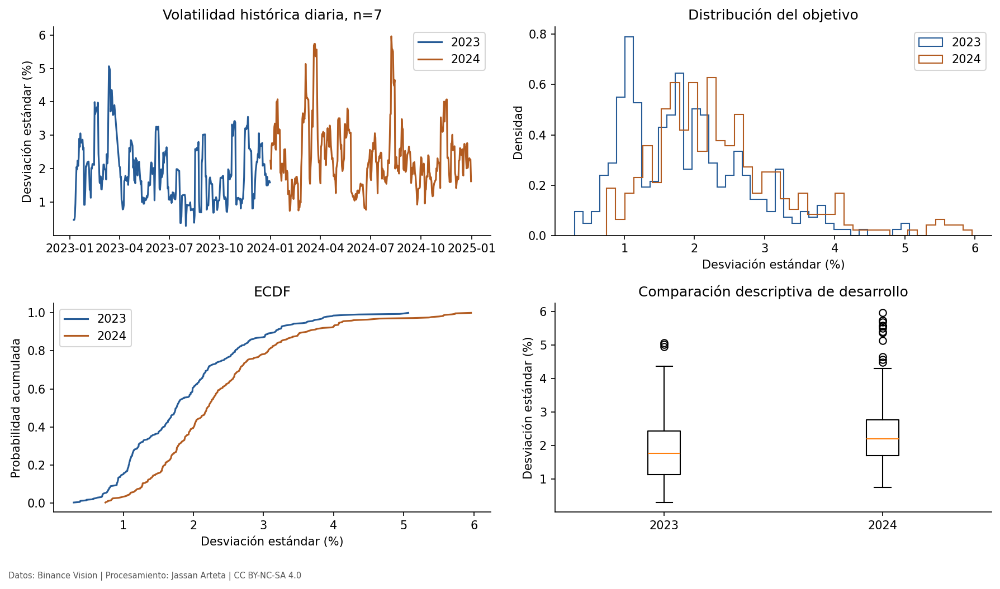
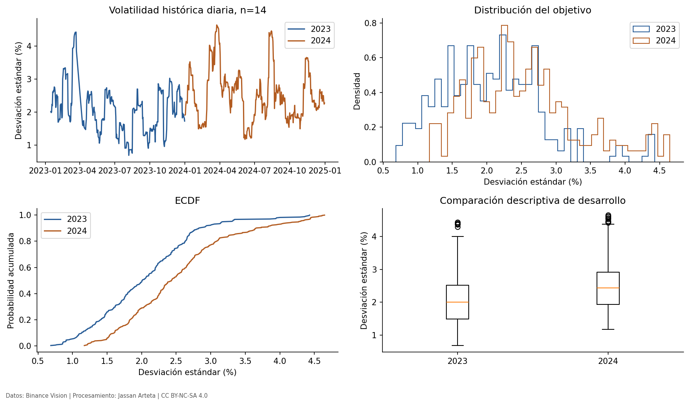
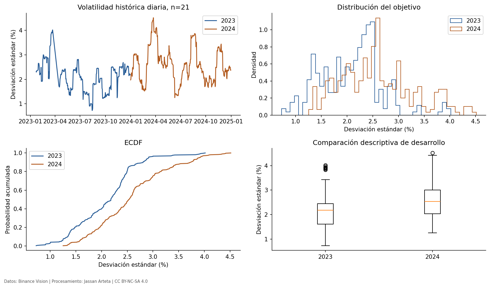
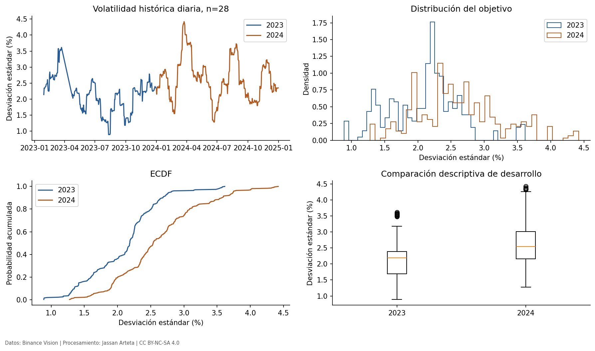
El complemento de EDA general cuantifica el objetivo principal en ambos periodos de desarrollo. Los valores siguientes conservan la escala original de retorno logarítmico:
Periodo |
Etiquetas válidas n=7 |
Media |
Desviación poblacional |
Mediana |
Percentil 95 |
Percentil 99 |
|---|---|---|---|---|---|---|
2023 |
350 |
0,018797 |
0,008890 |
0,017567 |
0,036130 |
0,042511 |
2024 |
366 |
0,023661 |
0,009767 |
0,021989 |
0,041092 |
0,056175 |
La asimetría y el exceso de curtosis de n=7 pasan de 0,802 y 0,496 en 2023 a 1,180 y 1,843 en 2024. Se observa mayor concentración empírica en la cola derecha de validación; estos momentos no demuestran por sí solos una ley de colas extremas. Como regla descriptiva se calcula únicamente con 2023 el límite superior \(Q_{0,75}+1{,}5\,IQR=0{,}04370768\): lo superan 3/350 días de 2023 (0,86 %) y 14/366 de 2024 (3,83 %). No se eliminan ni se recortan esas etiquetas por rebasar el umbral.
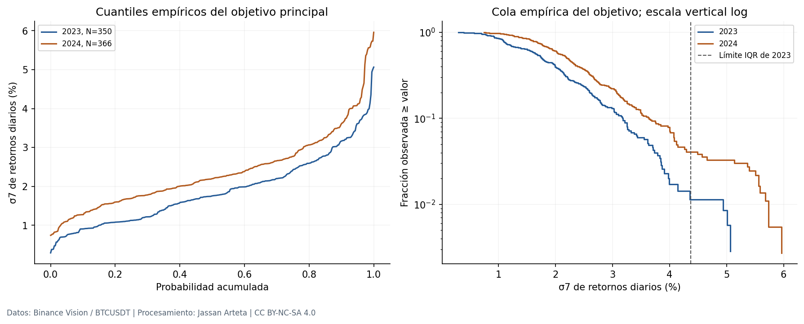
El perfil completo de objetivos incluye las ocho combinaciones año–ventana, sus cuantiles, ceros y marcas IQR con referencia fija de entrenamiento. Una etiqueta grande no es automáticamente un error del proveedor ni un residuo grande de un modelo. Se conserva MSE/RMSE como diseño aceptado; ponderaciones, Huber o transformaciones del objetivo no se introducen por inspección de estas gráficas.
La ventana de siete días presenta mayor variación temporal; aumentar la ventana suaviza la medida, pero cambia el objetivo y no demuestra que un modelo pronostique mejor. No aparecen etiquetas cero en estos derivados de desarrollo. Esto no garantiza que nunca aparezcan: se mantiene la política de MAPE ya fijada en §1.1.4, con etiquetas positivas, cobertura declarada y sin epsilon arbitrario. Al ser un objetivo continuo, los recuentos de clases, la entropía de clases y el balance entre clases de la guía no son aplicables.
Decisión de preprocesamiento: conservar las cuatro definiciones separadas y requerir retornos diarios consecutivos; no rellenar las etiquetas afectadas por huecos ni eliminar automáticamente los valores que superan el umbral IQR.
Impacto en la arquitectura: cada combinación de entrada y objetivo debe identificar sus dimensiones y conservar una salida escalar no negativa; la cola observada no fija por sí sola la profundidad o el ancho de la red. Las cuatro ventanas no se mezclan como si fueran la misma etiqueta.
Riesgos identificados: solapamiento de etiquetas, confusión entre ventana y horizonte y selección de una definición por desempeño de test. Los gráficos no prueban superioridad predictiva.
2.1.2. Calidad del dataset#
El EDA abrió exclusivamente los 24 ZIP mensuales de 2023–2024, verificando primero sus hashes. La cuadrícula tiene 1.052.640 minutos esperados y los archivos contienen 1.052.560 filas. No se detectaron valores no finitos en las doce columnas, precios OHLC no positivos, incoherencias OHLC ni volúmenes o conteos negativos en esas filas.
El 24/03/2023 faltan 80 minutos de apertura, desde 12:40 hasta 13:59 UTC, inclusive. La fila con apertura 12:39 UTC tiene un cierre temporal que no coincide con el fin esperado de la vela. Se conserva en el bruto y se marca no elegible para este análisis. Así hay 81 posiciones sin cierre elegible, no 81 filas ausentes del archivo.
La agregación diaria requiere 1.440 minutos elegibles: hay 364 días completos en 2023 y 366 en 2024. El 24/03/2023 permanece excluido, conforme a la decisión vigente; los retornos diarios y las ventanas no se calculan atravesando ese día. La posición de la fecha se conserva en el calendario.
Se verificaron la unicidad y el orden de los timestamps de apertura. Dos minutos con el mismo precio no se consideran por ello registros duplicados. Las etiquetas se calculan automáticamente con cierres válidos; no requieren acuerdo entre anotadores. La auditoría detecta inconsistencias temporales, pero no estima de forma independiente el error de los precios del proveedor ni el ruido de la volatilidad como aproximación a la incertidumbre del mercado.
La auditoría de los derivados diarios complementa los controles de los archivos originales:
Control diario |
2023 |
2024 |
Interpretación |
|---|---|---|---|
Días de calendario |
365 |
366 |
Cuadrícula conservada |
Días OHLCV completos |
364 |
366 |
Un día excluido en 2023 |
Retornos diarios válidos |
362 |
366 |
En 2023 faltan el retorno inicial y los dos que dependen del cierre excluido |
Etiquetas válidas n=7 |
350 |
366 |
Incluyen calentamiento y propagación del hueco a la ventana |
Claves de fecha duplicadas |
0 |
0 |
Un registro por día UTC |
Filas con OHLCV completo idéntico repetido |
0 |
0 |
Comprobación de valores; su repetición no justificaría por sí sola borrado |
Incoherencias OHLC, precios no positivos o volumen negativo |
0 |
0 |
Sobre los días completos observados |
Para verificar el etiquetado automático se reconstruyeron independientemente las 2.924 posiciones año–día–ventana, usando cierres y aritmética por fechas, sin reutilizar el cálculo móvil de pandas. Se obtuvieron 2.780 etiquetas válidas, cero discrepancias de elegibilidad y una diferencia numérica máxima de 1,027×10⁻¹⁵ frente a los CSV existentes. Esta comprobación detectaría desalineación, retornos a través de huecos o errores de cálculo; no mide el error de los precios de Binance ni el ruido económico del proxy de volatilidad.
El cierre ausente invalida los retornos del 24 y 25 de marzo. Los primeros objetivos nuevamente válidos son el 01/04, 08/04, 15/04 y 22/04/2023 para n=7/14/21/28, respectivamente. La historia de entrada también importa: para n=7, antes del embargo, los orígenes elegibles de 2023 son 350, 336, 322 y 308 para D=7/14/21/28; en 2024 son 366 por cada D. Son máscaras de datos, diferentes de las muestras permitidas para ajustar en cada fold.
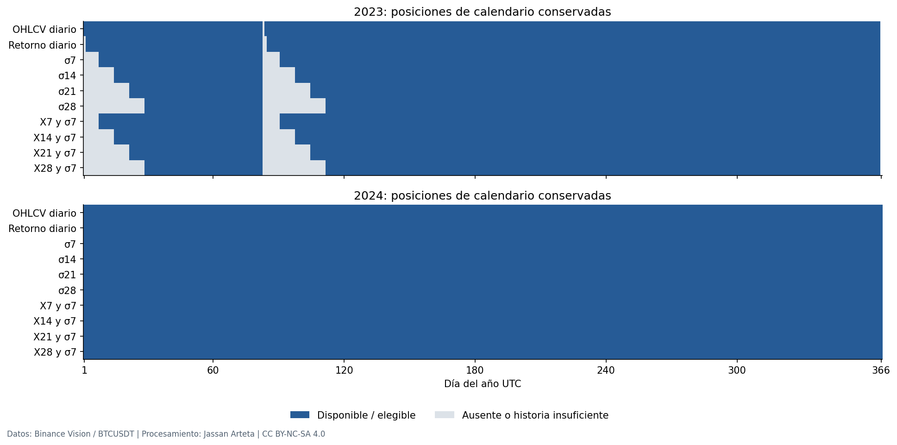
Se conservan las máscaras diarias, los controles de calidad por año, la reconstrucción de etiquetas y la elegibilidad por ventana. El registro de faltantes distingue el episodio intradiario, el día excluido y su propagación; el mecanismo MCAR/MAR/MNAR permanece no identificado con esta fuente y este único episodio. La ausencia de acuerdo entre anotadores no es un defecto aplicable a etiquetas calculadas automáticamente; la incertidumbre externa del proveedor y del proxy permanece sin estimación independiente.
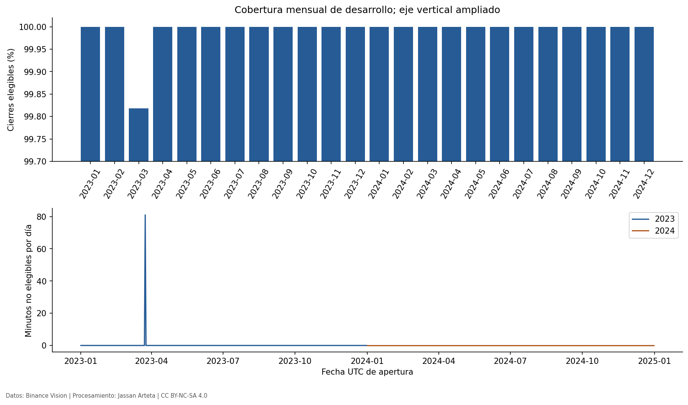
La barra de marzo de 2023 representa 44.559 cierres elegibles de 44.640 esperados: 99,82 %. El eje vertical comienza en 99,70 % y amplía la diferencia frente a los meses completos. La gráfica conserva el hueco original como evidencia de calidad, aunque el día afectado se excluya del modelado.
La concentración del hueco en un episodio temporal está observada, pero no basta para identificar MCAR, MAR o MNAR. Su causa necesita documentación del proveedor; no se atribuye una causa concreta sin evidencia. Los precios repetidos en minutos distintos no se tratan como duplicados erróneos.
Decisión de preprocesamiento: brutos inmutables; excluir de los derivados los días incompletos, sin interpolación; verificar continuidad al formar retornos y ventanas.
Impacto en la arquitectura: las entradas diarias deben ser secuencias completas de longitud fija, con calendario y exclusiones comunes para todos los modelos.
Riesgos identificados: rellenar con futuro, crear retornos a través de huecos o confundir 80 filas ausentes con 81 cierres no elegibles. La auditoría no mide todo el ruido económico de los precios.
2.1.3. Identificación de sesgos y desplazamientos de distribución#
El alcance contiene un activo, un exchange y una cotización en USDT. No representa todos los mercados de Bitcoin ni se interpreta USDT como idéntico a USD. La comparación 2023–2024 es de desarrollo; no se exploró el test para ajustar decisiones.
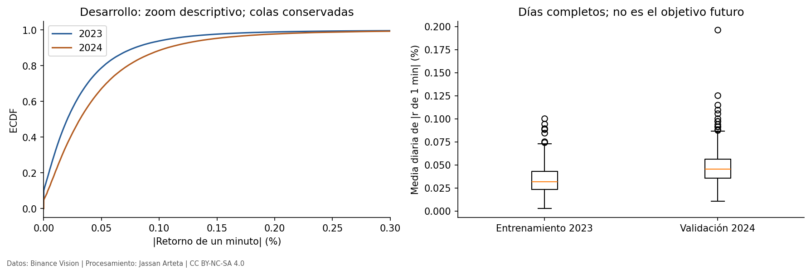
La figura compara una ECDF y la media diaria de magnitudes de retornos de un minuto. Esta magnitud es un diagnóstico histórico distinto del objetivo diario de volatilidad. Un bootstrap móvil de 2.000 réplicas, semilla 42 y bloques de 7 y 14 días estima el cambio de esa media entre validación y entrenamiento:
Bloque |
Diferencia 2024 − 2023 |
Intervalo percentil 95 % |
|---|---|---|
7 días |
0.000137639 |
[8.99012e-05, 0.000183894] |
14 días |
0.000137639 |
[7.83572e-05, 0.000192761] |
Es un diagnóstico condicionado a la estabilidad y representatividad de bloques; no es una prueba general de igualdad de distribuciones. Se conserva la posición de días incompletos y se omiten sus valores al promediar. Los bloques exploratorios no fijan la unidad inferencial del benchmark. El contraste de las cinco covariables y del objetivo principal se presenta por separado en §2.1.3.3.
Decisión de preprocesamiento: conservar el calendario y no igualar artificialmente los años; este diagnóstico de magnitudes intradiarias no transforma las etiquetas diarias.
Impacto en la arquitectura: exigir evaluación cronológica de modelos compactos antes de aumentar capacidad; una diferencia de actividad entre años no demuestra que una arquitectura concreta la aproveche.
Riesgos identificados: tratar días dependientes como i.i.d., confundir el proxy intradiario con el objetivo y transferir estos bloques al benchmark sin justificarlo.
2.1.3.1. Correlaciones con objetivos del día siguiente#
Las matrices se calcularon solo con 2023, alineando OHLCV del día anterior con la volatilidad del día de resultado, sin usar el OHLCV de ese mismo día como predictor. Se usan los casos completos comunes a las cuatro ventanas.
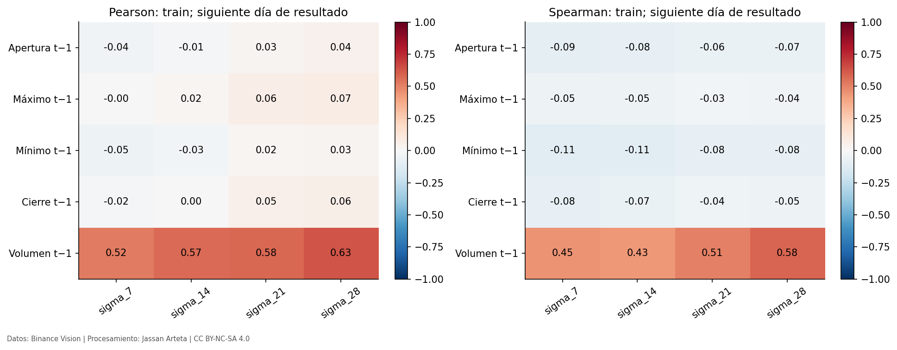
Las relaciones son descriptivas. Los niveles OHLC comparten una gran parte de su información y las volatilidades móviles comparten retornos; una correlación no demuestra causalidad ni mejora respecto a persistencia.
Decisión de preprocesamiento: mantener los desfases causales y contrastar las relaciones en el tiempo; no eliminar covariables ni añadir rezagos del objetivo por una correlación aislada.
Impacto en la arquitectura: conservar las cinco entradas acordadas y comprobar regularización con el mismo conjunto de información, sin equiparar cuatro precios correlacionados a cuatro señales independientes.
Riesgos identificados: asociación espuria con niveles de precio, información del retorno aún desconocido y confusión entre relación descriptiva y capacidad predictiva.
2.1.3.2. Exploración multivariada#
PCA se ajustó únicamente con los OHLCV diarios completos de 2023, estandarizados con media y desviación de ese entrenamiento. Los días de 2024 solo se proyectaron con esos parámetros.
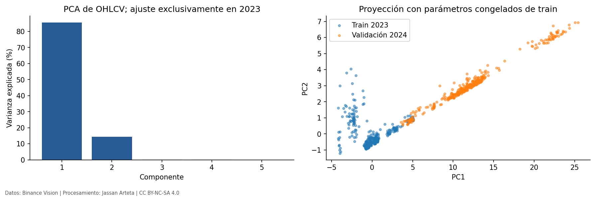
Los dos primeros componentes explican 99.78 % de la varianza estandarizada de entrenamiento. Esto evidencia redundancia de los niveles OHLC, pero no acredita utilidad predictiva ni autoriza por sí solo descartar variables. PCA no se ha seleccionado como transformación del modelo.
Decisión de preprocesamiento: si se adopta escalado o reducción, reajustarlos dentro del entrenamiento de cada fold; no igualar artificialmente distribuciones entre años.
Impacto en la arquitectura: comparar representaciones diarias con dimensiones explícitas, evitando añadir complejidad solo por colinealidad o drift descriptivo.
Riesgos identificados: correlaciones espurias de niveles, ventanas objetivo solapadas, PCA ajustado globalmente y consultas de test para seleccionar atributos. No se han ejecutado aún información mutua ni VIF; no se presentan como productos completados.
2.1.3.3. Desplazamiento de covariables y objetivo principal#
La comparación utiliza un perfil causal de un día de rezago: OHLCV de \(d-1\) y volatilidad de siete retornos del día \(d\). Las seis variables comparten 350 casos completos en 2023 y 366 en 2024; se conserva la cuadrícula de 731 días y sus posiciones ausentes. Este perfil no equivale a la distribución conjunta de todas las ventanas D ni a un conjunto de predicciones de modelos.
Se calcula la distancia marginal de Kolmogórov–Smirnov \(D_{\mathrm{KS}}=\sup_x|F_{2023}(x)-F_{2024}(x)|\). Para tener una referencia temporal exploratoria se usan bloques calendarios completos de 14 y 28 días, 2.000 permutaciones por longitud y semilla 42. Solo se intercambian bloques plenamente observados, conservando cuántos pertenecen a cada periodo. Las colas anuales de uno y dos días y los bloques que contienen ausencias permanecen fijos; no se imputan ni se comprimen fechas. Cada permutación conserva los tamaños 350/366.
Variable del perfil causal |
Mediana 2023 |
Mediana 2024 |
Distancia KS |
Referencia ajustada Holm, bloque 14 días |
Referencia ajustada Holm, bloque 28 días |
|---|---|---|---|---|---|
Apertura de d−1 (USDT) |
27808,42 |
64062,61 |
0,923 |
0,0060 |
0,0060 |
Máximo de d−1 (USDT) |
28313,21 |
65548,07 |
0,920 |
0,0060 |
0,0060 |
Mínimo de d−1 (USDT) |
27247,50 |
62768,57 |
0,924 |
0,0060 |
0,0060 |
Cierre de d−1 (USDT) |
27808,42 |
64115,77 |
0,920 |
0,0060 |
0,0060 |
Volumen de d−1 (BTC) |
40446,80 |
29716,60 |
0,233 |
0,0855 |
0,2174 |
Volatilidad n=7 del día d |
0,017567 |
0,021989 |
0,241 |
0,0620 |
0,0940 |
La referencia Monte Carlo se calcula como \(p_{\mathrm{MC}}=(1+\#\{D_r^*\ge D_{\mathrm{obs}}\})/(2000+1)\); se aplica Holm a la familia conjunta de doce contrastes —seis variables por dos longitudes— con nivel 0,05. No se usan los p-values i.i.d. habituales de KS para tratar estos días como independientes. La permutación solo construye una referencia del EDA: la partición cronológica real permanece intacta.
La hipótesis de referencia es intercambiabilidad de los bloques completos entre años, condicionada a las partes fijas. Con bloques de 14 días hay 23 bloques de entrenamiento y 26 de validación permutables; con 28 días, 10 y 13. Permanecen fijos 28/350 o 70/350 valores de entrenamiento, respectivamente, y 2/366 de validación. Cambiar de 14 a 28 días también cambia el conjunto permutable; la comparación no aísla exclusivamente la longitud del bloque. Tendencias, cambios de régimen y dependencia entre bloques impiden presentar estos resultados como inferencia exacta o confirmatoria; Holm corrige multiplicidad, no la calibración temporal.
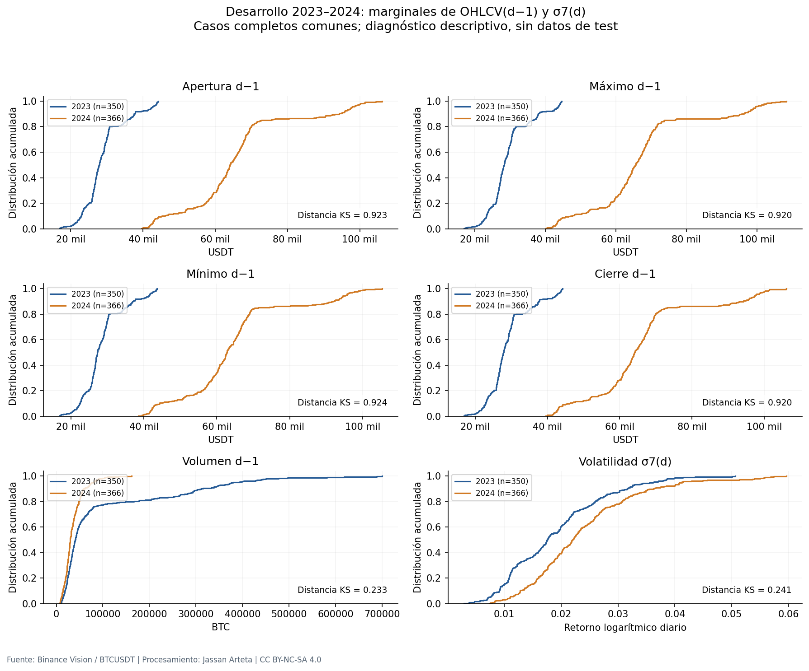
Los niveles OHLC muestran una separación marginal amplia, con distancias KS de 0,920–0,924 y referencia ajustada aproximada 0,0060 para ambas longitudes. La mediana del cierre previo pasa de 27.808,43 a 64.115,77 USDT. El volumen y el objetivo también presentan diferencias descriptivas, pero sus referencias ajustadas superan 0,05; no rechazar ese escenario no demuestra igualdad ni ausencia de desplazamiento. En particular, el aumento observado de la mediana o de la cola de volatilidad no equivale a una ruptura confirmada bajo cualquier diseño temporal.
El perfil descriptivo por periodo, las distancias y tamaños de diferencia, los contrastes condicionales, los bloques y sus máscaras y el resumen reproducible conservan los resultados y supuestos. No se abrió test para hacer estas comparaciones.
Decisión de preprocesamiento: ajustar escalas solo con el pasado permitido, preservar los regímenes en la evaluación cronológica y no transformar validación para hacerla coincidir artificialmente con entrenamiento. Estos bloques no fijan la longitud de remuestreo del benchmark.
Impacto en la arquitectura: exigir comparación con referencias simples y evaluación temporal antes de atribuir una mejora a mayor capacidad; una diferencia entre distribuciones no selecciona una red ni autoriza cambiar las cinco covariables.
Riesgos identificados: no estacionariedad, bloques no independientes, interpretación causal de un cambio marginal y selección de variables, pérdidas o ventanas por los p-values. La revisión cubre seis marginales del perfil lag1, no igualdad conjunta ni todos los rezagos D.
Descripción posterior a la evaluación final. Tras congelar y puntuar los modelos, se amplió el perfil descriptivo a 2025 y enero–agosto de 2026 usando únicamente derivados y pronósticos ya guardados. Este análisis documenta desplazamiento y cobertura; no cambia escalas, hiperparámetros o fechas elegibles del test.
Periodo UTC |
Etiquetas σ7 observadas |
Media σ7 |
Mediana σ7 |
W₁ / DE de referencia |
|---|---|---|---|---|
2023 |
350 |
0,018797 |
0,017567 |
0,250065 |
2024 |
366 |
0,023661 |
0,021989 |
0,245177 |
2025 |
365 |
0,018536 |
0,016714 |
0,280043 |
Enero–agosto de 2026 |
243 |
0,019390 |
0,016681 |
0,314100 |
El perfil completo reúne OHLCV, log1p del volumen, retorno logarítmico y σ7 para los cuatro periodos. W₁ es la distancia de Wasserstein normalizada por la DE del desarrollo observado hasta el 03/12/2024; no es un p-value ni una prueba de igualdad. El año 2023 conserva menos etiquetas por la historia inicial y el día excluido. El test conserva 365+243=608 fechas. Una diferencia de distribución no se atribuye causalmente a un factor ni autoriza retocar el pipeline con resultados del test.
2.1.4. Partición del dataset#
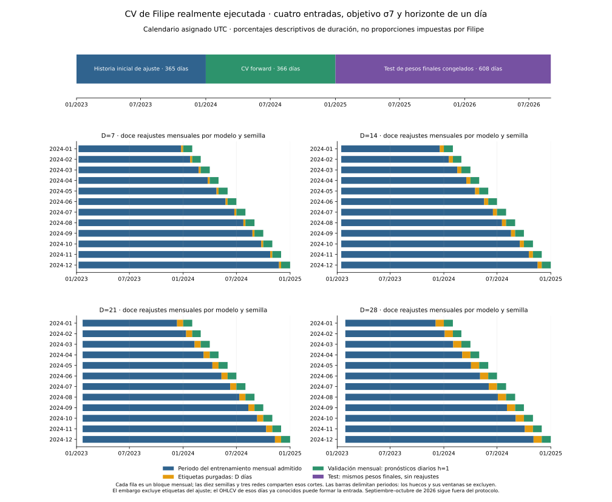
Figura de la ejecución real. Los 48 bloques dibujados son doce cortes por cada D, compartidos por las tres redes y las diez semillas. Las barras azules delimitan el periodo del entrenamiento mensual permitido; los huecos y sus ventanas se excluyen. El embargo naranja retira etiquetas del ajuste, sin impedir usar como entrada el OHLCV de esos días ya observados. El test morado corresponde a pesos finales congelados, sin reajustes durante sus veinte meses. El diagrama se reconstruye únicamente desde los manifiestos de índices mediante draw_e1_cv_calendar.py.
Se mantiene entrenamiento inicial 2023, validación forward chaining en 2024, ajuste final con desarrollo permitido y test 2025–agosto de 2026. El ciclo final fue ejecutado después de cerrar configuraciones, con registro separado del EDA de desarrollo. Septiembre–octubre de 2026 no amplió automáticamente el test de fase I. La asignación posterior y explícita del 01/09–30/10/2026 pertenece a fase II D7 y a su protocolo independiente.
Las proporciones siguientes usan 1.339 días de calendario asignados al protocolo, del 01/01/2023 al 31/08/2026. Se calculan dividiendo 365, 366 y 608 entre 1.339; son consecuencia de las fechas elegidas, no proporciones exigidas por el método de Filipe ni una partición aleatoria. El 54,59 % corresponde al calendario de desarrollo y el 45,41 % al periodo de prueba. No son proporciones de ventanas supervisadas ni de filas de un minuto:
Función del periodo |
Fechas UTC |
Días de calendario |
Porcentaje del calendario asignado |
Regla y semilla de partición |
|---|---|---|---|---|
Historia inicial de ajuste |
01/01/2023–31/12/2023 |
365 |
27,26 % |
Cronológica y determinista; semilla no aplicable |
Orígenes de validación |
01/01/2024–31/12/2024 |
366 |
27,33 % |
Origen móvil y embargo D; semilla no aplicable |
Prueba histórica |
01/01/2025–31/08/2026 |
608 |
45,41 % |
Asignación cronológica; periodo ya observado; semilla no aplicable |
Total asignado |
01/01/2023–31/08/2026 |
1.339 |
100 % |
Sin barajar fechas |
Los 60 días adquiridos entre el 01/09/2026 y el 30/10/2026 quedan fuera de este denominador y de las etapas definidas. El ajuste final previsto utiliza desarrollo 2023–2024, por lo que no es una cuarta partición independiente. Dentro de la validación, la historia de ajuste puede crecer con el pasado permitido; el número efectivo de muestras depende de D, n, el embargo y las exclusiones. Las semillas de los remuestreos exploratorios se registran por separado y no sustituyen una semilla de división.
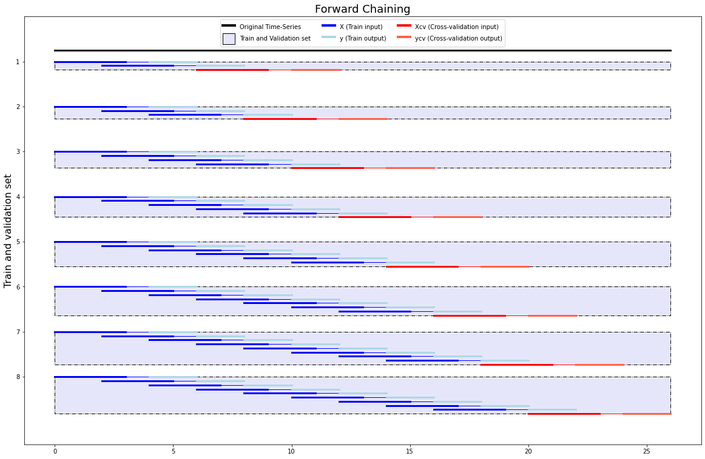
Figura: ejemplo oficial de split_train_val_forwardChaining, extraído sin modificar del notebook de timeseries-cv. Proyecto de DidierRLopes, desarrollado con coautoría de Filipe R. Ramos. Se conserva su licencia MIT y aviso de copyright. La figura representa la serie sintética 0,…,26, con entrada 4, salida 3 y salto 2; sus ocho filas son folds del ejemplo, no años ni resultados de Bitcoin.
import numpy as np
from tsxv.splitTrainVal import split_train_val_forwardChaining
timeSeries = np.arange(27)
X, y, Xcv, ycv = split_train_val_forwardChaining(
timeSeries, numInputs=4, numOutputs=3, numJumps=2
)
La versión publicada 0.1.5 usa la firma sequence, numInputs, numOutputs, numJumps. Los nombres n_steps_input, n_steps_forecast y n_steps_jump del README no coinciden con esa firma y generan TypeError en esa versión. La llamada anterior y su equivalente posicional (timeSeries, 4, 3, 2) fueron ejecutadas y verificadas. X, y, Xcv e ycv son diccionarios por fold, no un único arreglo global.
Preparación histórica de BTCUSDT: se ejecutó esa función sobre índices del calendario diario de desarrollo, con entradas de 7/14/21/28 días, salida de un día y salto de un día. Las entradas se mapean a OHLCV y las salidas a volatilidad por separado: pasar OHLCV directamente a la función produciría salidas OHLCV, no la etiqueta de volatilidad del proyecto.
Se conservaron los folds cuyo día de resultado cae en 2024, se excluyeron ventanas no elegibles y se comprobó que las etiquetas de entrenamiento estaban disponibles antes del pronóstico. La preparación contiene 366 orígenes por configuración, para las 16 combinaciones de historia de entrada y ventana de volatilidad: 5.856 filas de configuración-fold. Son índices de preparación, no días independientes ni modelos entrenados. La ejecución principal de las tres redes utiliza D=7/14/21/28, n=7 y h=1 mediante doce bloques mensuales de Filipe; el registro vigente distingue la CV nueva de GRU/LSTM/TCN y la comprobación de identidad del control LSTM. Las sensibilidades del objetivo n=14/21/28 permanecen sin entrenamiento DL.
En la revisión del 03/11/2026 se hizo explícita y se aplicó la convención de embargo de la ruta 6.4: para evaluar el día \(t\), se omiten del ajuste los \(D\) días de resultado completos \([t-D,t-1]\). Una muestra de ajuste con día de resultado \(u\) debe cumplir \(u\le t-D-1\), además de los controles de disponibilidad y calidad. La distancia mínima entre su día de resultado y el de validación es, por tanto, \(D+1\) días. El máximo rezago de las covariables de \(X_t=(z_{t-D},\ldots,z_{t-1})\) es \(D\).
La versión 2 del manifiesto corrige la frontera anterior \(u=t-D\), que omitía solo \(D-1\) días de resultado interiores. La regeneración conservó los 5.856 orígenes de configuración-fold y eliminó una muestra de ajuste por fila; no modificó OHLCV, etiquetas, figuras ni datos de test. Para el objetivo principal, los índices actuales contienen:
Historia de entrada \(D\) |
Folds de validación de 2024 |
Mínimo de muestras de ajuste |
Máximo de muestras de ajuste |
|---|---|---|---|
7 días |
366 |
343 |
708 |
14 días |
366 |
322 |
687 |
21 días |
366 |
301 |
666 |
28 días |
366 |
280 |
645 |
Son recuentos de índices elegibles para \(n=7\), no corridas de entrenamiento. El resumen descargable conserva los recuentos de las dieciséis configuraciones. El SHA-256 del CSV corregido es d46153075ce18231f24ff43b6f80dba555003b963dc5d1c4bd4d8ade90148571.
El embargo de covariables no implica independencia de las etiquetas móviles. El manifiesto registra 2.196 filas de seis configuraciones de sensibilidad con \(n>D+1\) donde la última etiqueta de ajuste y la de validación comparten retornos. Esa dependencia debe conservarse en el diseño de inferencia posterior; los folds no se contarán como réplicas independientes.
La preparación general se reproduce con scripts/prepare_forward_chaining.py. El resumen y verificación del ejemplo y el manifiesto de índices conservan fechas, cantidades y hashes. Para la ejecución de las redes se usan los bloques mensuales de scripts/prepare_dl_r2_cv.py, descritos a continuación. La división es cronológica y no necesita semilla de barajado; las semillas del entrenamiento se registran por separado.
Ciclo CV con entrenamiento real de las tres redes. scripts/prepare_dl_r2_cv.py ejecuta la función real de timeseries-cv 0.1.5 con los parámetros de Bitcoin:
X, y, Xcv, ycv = split_train_val_forwardChaining(
np.arange(731), numInputs=7, numOutputs=1, numJumps=1
)
Los orígenes diarios de validación de 2024 se agrupan en doce bloques mensuales. Esta adaptación usa los candidatos de entrenamiento del primer origen del mes, aplica el embargo adicional y la máscara de calidad, y reúne las ventanas de validación diarias de ese mes; la librería no tiene una API mensual nativa. El adaptador vigente scripts/run_gru_lstm_tcn.py consume esos índices firmados para ajustar GRU, LSTM y TCN con sus propios escaladores de entrenamiento. En cada corte se selecciona duración internamente y se reajusta una red desde cero. Los pesos quedan fijos durante el bloque y cada predicción sigue siendo h=1 con información disponible hasta el día anterior. No son 366 reajustes ni un pronóstico del mes entero emitido desde su primer día.
El entrenamiento inicial usa 2023 y después incorpora solo pasado admisible de 2024. Para cualquier D se exige u≤inicio mensual−D−1, además de calidad y disponibilidad. La parada interna usa los últimos 90 días de calendario y su propio embargo, con 83/76/69/62 etiquetas para D=7/14/21/28. Los manifiestos públicos identifican reglas, fechas, hashes y procedencia; los índices completos se conservan localmente. En D7, el primer ajuste mensual conserva 343 ejemplos admisibles; los recuentos de las otras entradas cambian con la historia, la purga y la calidad.
El ciclo vigente utiliza relative_window para GRU/LSTM/TCN y D=7/14/21/28. Se ejecutaron las 120 trayectorias completas, con 1.440 segmentos, 2.880 ajustes y 43.920 predicciones; las cuarenta trayectorias LSTM se reentrenaron y cotejaron con su control. RMSE/R² anual se calcula agrupando primero las 366 predicciones de cada trayectoria y después se resumen las diez semillas. La selección actual no utiliza otra representación o una ventana diferente para favorecer a una red.
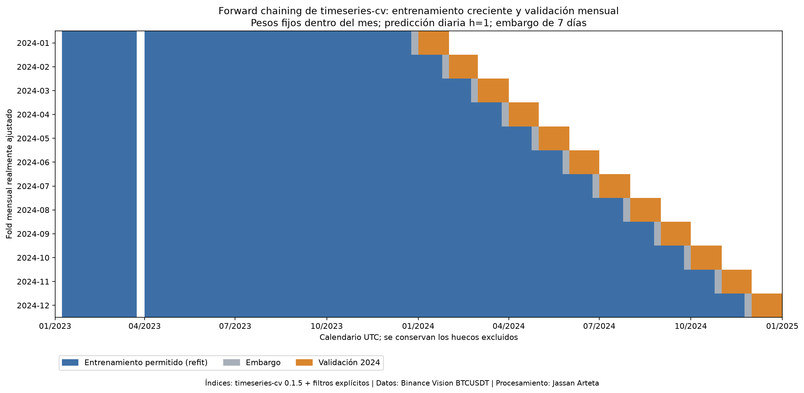
Figura: adaptación propia de los índices de timeseries-cv para BTCUSDT, con los doce bloques mensuales utilizados para entrenar. El ejemplo oficial anterior permanece sin modificar, con su atribución y licencia MIT.
La CV es exploratoria: el desarrollo de 2024 ya estuvo expuesto al EDA y a decisiones de configuración. La selección entre las doce combinaciones de familia e historia se cerró usando solo esa CV. Después se cerraron 120 checkpoints finales sobre desarrollo permitido de 2023–2024, con embargo D y épocas fijadas: 80 ajustes GRU/TCN nuevos y 40 LSTM idénticos reutilizados. El test 2025–agosto de 2026 ya había sido observado y se mantiene como evaluación exploratoria. Sus veinte bloques mensuales sirven para reportar errores de pesos fijos; no son nuevos folds de selección o reajuste.
Decisión de preprocesamiento: utilizar los índices corregidos de la versión 2, con embargo explícito de \(D\) días y soportes de etiqueta registrados; ajustar transformaciones solo con el entrenamiento permitido de cada fold y conservar esos controles en las ejecuciones. La ejecución CV emplea cohortes mensuales crecientes y registra los índices realmente utilizados por cada ajuste.
Impacto en la arquitectura: los modelos deben evaluarse con el mismo calendario y muestras comparables dentro de cada configuración.
Riesgos identificados: etiquetas que crucen cortes, confundir días con muestras y elegir el tamaño de entrada usando test.
2.1.4.1. Congelación del conjunto de prueba#
Los ZIP tienen hashes de adquisición. En la revisión del 03/11/2026 se conservó además el manifiesto de reserva de test bruto, que identifica 20 ZIP mensuales para 01/01/2025–31/08/2026: 608 días de calendario y 875.520 filas reportadas por el manifiesto de adquisición. La reserva se construyó seleccionando metadatos existentes, sin abrir los ZIP de test. Su SHA-256 es d2eb4e84fff85ee957e6b02890cead3cec37fd593ec2a8db487dbe137d2d3a10.
La reserva original fijó la identidad de los brutos y el proyecto ya completó su adquisición y evaluación histórica. No se vuelve a presentar ese periodo como desconocido. En el ciclo GRU–LSTM–TCN se cerraron configuraciones y 120 checkpoints antes de acceder al derivado diario auditado del test: 80 ajustes nuevos y 40 LSTM idénticos reutilizados. El manifiesto de protocolos y procedencia distingue esa secuencia. No se volvieron a abrir ZIP brutos ni se incorporó septiembre–octubre de 2026. La cohorte común conserva 608 fechas y las reglas de elegibilidad ya documentadas.
Decisión de preprocesamiento: congelar código, reglas y manifiesto de muestras antes de evaluar test; verificar después los hashes.
Impacto en la arquitectura: comparar modelos y decisiones ya fijados, sin adaptar arquitecturas al resultado de test.
Riesgos identificados: asumir que un hash demuestra ausencia de consulta o que descargar equivale a evaluar. El plan se registra por fase; la congelación del ciclo vigente antecede a su acceso al derivado de test, pero el periodo ya había sido observado. La cohorte procede de reglas de calidad cerradas y no excluye fechas por sus errores.
2.2. EDA Específico por Tipo de Problema#
Se presentan los diez bloques A–J de la guía, con todos sus incisos y una justificación de aplicabilidad. El desarrollo específico del contrato actual corresponde a regresión temporal, bloque C (§2.2.3). Los controles numéricos del bloque A y los diagnósticos temporales del bloque B que resultan pertinentes se relacionan con su evidencia existente; los bloques de otras modalidades explican por qué no corresponden a las entradas y al objetivo definidos.
La inclusión de un inciso no acredita su ejecución. Cada bloque termina con decisión de preprocesamiento, impacto en la arquitectura y riesgos identificados. Esta organización conserva la evidencia de desarrollo y distingue los análisis ya realizados de los requisitos no aplicables o pendientes.
Apartado |
Aplicabilidad al contrato actual |
Motivo |
|---|---|---|
2.2.1. Clasificación y Regresión |
Controles compartidos; no es la ruta principal |
Objetivo continuo y evaluación temporal; los controles numéricos se conservan sin adoptar una partición aleatoria. |
2.2.2. Series de Tiempo |
Diagnósticos de apoyo; no es la ruta principal |
No hay rezagos explícitos del objetivo como entrada; los diagnósticos temporales de §2.5 sí son pertinentes. |
2.2.3. Regresión Temporal |
Sí aplica |
Covariables OHLCV rezagadas, salida continua, disponibilidad causal y partición cronológica. |
2.2.4. Regresión Espacial |
No aplica |
No hay coordenadas o unidades espaciales de predicción. |
2.2.5. Regresión Espacio-Temporal |
No aplica |
No hay ubicaciones múltiples, rejilla geográfica ni red de sensores. |
2.2.6. Clasificación de Imágenes |
No aplica |
No hay imágenes de entrada ni clases visuales. |
2.2.7. Segmentación de Imágenes |
No aplica |
No hay pares imagen–máscara ni etiquetas por píxel. |
2.2.8. Clasificación de Texto |
No aplica |
No hay un corpus textual de entrada ni clases documentales. |
2.2.9. Etiquetado Secuencial |
No aplica |
No se asignan etiquetas por token o elemento de entrada. |
2.2.10. Aprendizaje Secuencia a Secuencia |
No aplica |
La salida principal es una volatilidad escalar a un día, no una secuencia destino. |
2.2.1. Clasificación y Regresión#
Aplicabilidad al proyecto: no se adopta el bloque A como ruta principal. Las cinco covariables OHLCV pueden almacenarse en una tabla, pero su uso para anticipar una volatilidad diaria exige el reloj causal, la dependencia y la partición temporal del bloque C (§2.2.3). La clasificación no aplica porque el objetivo es continuo y no se han definido clases. Los controles de atributos y de regresión que se comparten con este bloque sí son pertinentes; se relacionan a continuación con la evidencia existente.
2.2.1.1. Estructura de atributos#
Tipificación, cardinalidad y escalas: O/H/L/C y volumen son atributos numéricos continuos; los precios se expresan en USDT y el volumen en BTC. Las entradas acordadas conservan D×5 valores, con D=7/14/21/28 días. No hay categorías nominales u ordinales ni identificadores de entidades que requieran estudiar cardinalidad categórica.
Distribuciones, asimetría y valores atípicos: los perfiles, distribuciones y extremos de desarrollo se conservan en §2.1 y §2.5. La regla IQR descrita para la volatilidad pertenece al objetivo; no se atribuye a todas las covariables ni se inventa una distancia de Mahalanobis calculada. Un valor extremo no se elimina sin comprobar si es un error o una observación válida.
Implicación de transformación y codificación: cualquier escalado aprendido debe ajustarse solo al entrenamiento permitido. El escalado robusto es una opción de la guía cuya adopción no queda fijada en esta reorganización. Los logaritmos de los análisis descriptivos no constituyen una transformación ya seleccionada para las redes. One-hot y embeddings de entidades no aplican a este contrato sin variables categóricas; no se añade esa modalidad durante la reorganización.
2.2.1.2. Relación entre atributos y objetivo#
Correlaciones lineales, de rango y relaciones no lineales: Pearson y Spearman se documentan en §2.1.3.1 y en el análisis temporal de §2.2.3, respetando el desfase entre covariable y objetivo. Información mutua no se presenta como ejecutada. Ninguna correlación por sí sola demuestra causalidad o capacidad para anticipar la parte aún desconocida del objetivo.
Multicolinealidad: el PCA de §2.1.3.2 describe la redundancia de los niveles OHLC. No sustituye un VIF ni un número de condición documentado, y no autoriza eliminar covariables o seleccionar una red por esa sola evidencia.
Fuga hacia el objetivo: el OHLCV completo del día de resultado y cualquier atributo conocido después del origen no pueden ser entradas de ese pronóstico. Los controles de disponibilidad se desarrollan en §2.2.3; el test permanece fuera de la selección.
2.2.1.3. Complejidad de la tarea#
La referencia lineal regularizada solicitada para una primera aproximación ya existe como cuatro Ridge diagnósticas, una por historia de entrada, ajustadas exclusivamente con muestras permitidas de 2023 y evaluadas descriptivamente en 2024. Su desarrollo se conserva en §2.2.3. La separabilidad entre clases no aplica a este objetivo continuo. La dependencia de sus residuos señala límites de esa referencia, pero no cuantifica automáticamente una ganancia alcanzable por una red ni prueba que la relación completa sea lineal o no lineal.
No se transforma este diagnóstico en un ranking de historias o en un baseline DL medido. El margen operativo académico de §1.1.4 propone para un modelo avanzado futuro una mejora superior al 5 % frente a GRU/D7 y frente a persistencia. Se declaró después del test actual y no se contrasta con las referencias Ridge de este EDA.
2.2.1.4. Implicaciones clave#
La profundidad, el ancho y la regularización de GRU, LSTM y TCN requieren evidencia y protocolo propios; no se deducen de este bloque. Se conservan MSE como pérdida prevista, RMSE primaria y una salida escalar de volatilidad. Entropía cruzada ponderada y balance de clases no aplican sin un objetivo de clasificación; Huber es una opción de la guía que no se adopta por esta reorganización. La partición debe seguir siendo cronológica con embargo; la representación en tabla no permite barajar fechas.
Decisión de preprocesamiento: conservar OHLCV numérico, desfases causales y escalado aprendido solo con pasado; no introducir codificaciones categóricas o transformaciones nuevas.
Impacto en la arquitectura: mantener D×5 y el mismo objetivo entre modelos; las referencias lineales son diagnósticos de EDA y las tres redes GRU/LSTM/TCN se ejecutaron por separado en los capítulos 4–5. El capítulo 3 documenta su uso como comparadores independientes, sus configuraciones adaptadas y la limitada recurrencia directa de TCN.
Riesgos identificados: tratar ventanas temporales como filas independientes, confundir PCA/correlación con utilidad predictiva, usar información posterior al origen o presentar el bloque tabular como sustituto del análisis temporal.
2.2.2. Series de Tiempo#
Aplicabilidad al proyecto: el bloque B no es la ruta principal mientras el contrato de entrada conserve OHLCV rezagadas sin rezagos explícitos de la volatilidad objetivo. Se mantiene el tipo 4 y el bloque C (§2.2.3). Eso no implica independencia o exogeneidad de OHLCV: los precios contienen información histórica y participan en la construcción de retornos. Los diagnósticos temporales pertinentes ya existentes se conservan como apoyo en §2.5 y se relacionan con todos los incisos de la guía.
2.2.2.1. Visualización y descomposición#
Las gráficas de cierre, retorno y volumen diarios, la descomposición STL y el candidato exploratorio de cambio de régimen se documentan en §2.5.1. La STL describe tendencia, componente estacional y residuo en un tramo continuo de entrenamiento; el periodo semanal impuesto no demuestra estacionalidad ni estima automáticamente estacionalidades múltiples. El candidato de CUSUM no constituye una ruptura confirmada ni identifica una causa de mercado. No se reutiliza un suavizado centrado como predictor causal.
2.2.2.2. Estacionariedad#
ADF y KPSS se interpretan conjuntamente con las especificaciones y resultados de §2.5.2. Los cuatro escenarios se distinguen: ADF rechaza y KPSS no rechaza es compatible con estacionariedad bajo sus modelos; ADF no rechaza y KPSS rechaza es compatible con no estacionariedad; ambos rechazan exige revisar la discrepancia y la especificación; ninguno rechaza es inconcluso. Un no rechazo no demuestra el supuesto correspondiente, y las conclusiones de un tramo no garantizan estabilidad futura.
Diferenciación, transformación logarítmica o de potencia y normalización por ventana son alternativas que requieren justificación propia. No se aplican automáticamente para forzar una prueba favorable; cualquier parámetro aprendido debe usar únicamente el pasado permitido. Las definiciones n=7 y h=1 no cambian.
2.2.2.3. Dependencia temporal#
ACF, PACF con bandas aproximadas y periodograma se conservan en §2.5.3, con la unidad y el tramo de cada diagnóstico explícitos. Se examinan rezagos y periodicidades como descripciones, sin elegir una D ganadora por el mayor pico observado. Los resultados diarios, horarios y de minuto no se tratan como intercambiables.
La heterocedasticidad se estudió con ARCH-LM; esa prueba no es un diagnóstico general de no linealidad. El análisis de términos polinómicos con covarianza HAC examina otra hipótesis bajo su especificación y tampoco cubre toda forma de no linealidad. Son diagnósticos exploratorios, distintos del análisis de residuos predictivos de la referencia de §2.2.3 y de las redes del experimento propio de los capítulos 4–5.
2.2.2.4. Frecuencia, granularidad y datos faltantes#
Se mantiene adquisición de un minuto y modelado diario UTC. La frecuencia, regularidad, episodio de minutos faltantes y día excluido se documentan en §2.1.2 y §2.5.4. La política vigente preserva el calendario, excluye el día incompleto y las ventanas afectadas y no imputa; no se calcula un retorno diario atravesando un hueco ni se emplea información futura.
La decisión entre modelos locales y globales para varias series no aplica a un alcance con un único par BTCUSDT y una sola serie de respuesta. El uso conjunto de cinco covariables OHLCV sí corresponde a una entrada multivariante; no crea por sí solo varios mercados independientes.
2.2.2.5. Outliers y anomalías#
Las distribuciones y criterios descriptivos de extremos existentes se conservan en §2.1.1 y §2.5.5. Se distinguen errores verificables de episodios reales; no se aplica clipping ni se atribuye una causa económica sin evidencia. El efecto de esos episodios sobre el error de pronóstico requiere resultados de modelos y permanece pendiente: sus colas o su posición en una gráfica no lo cuantifican.
2.2.2.6. Implicaciones clave#
El horizonte principal es h=1 y la historia de entrada sigue siendo D=7/14/21/28 días. Las estrategias multi-paso recursiva, directa o multi-salida son opciones para un alcance con varios horizontes; no se implementan como ampliación de este pronóstico escalar. La partición cronológica, la validación de origen móvil y el escalado con pasado se mantienen en §2.1.4 y §2.2.3.
Añadir rezagos explícitos de volatilidad exigiría versionar antes el contrato de entrada y revisar la ruta como tipo 3. La autocorrelación por sí sola no introduce ese cambio, no autoriza usar el objetivo futuro y no demuestra superioridad de una arquitectura.
Decisión de preprocesamiento: conservar el calendario diario, la exclusión estricta, las cinco covariables y el ajuste causal de transformaciones; los diagnósticos de §2.5 permanecen como evidencia de apoyo.
Impacto en la arquitectura: mantener entrada D×5 y salida escalar para h=1; la elección de familia, dimensiones y política de actualización pertenece al cierre experimental, no a un pico de ACF o una prueba aislada.
Riesgos identificados: fuga temporal, ventanas y objetivos solapados, confusión de frecuencias o de hipótesis estadísticas, extrapolación de un tramo de desarrollo y conversión de diagnósticos retrospectivos en señales disponibles al origen.
2.2.3. Regresión Temporal#
Aplicabilidad: sí; es el bloque específico principal del proyecto.
Se aplica el bloque C de la guía: regresión temporal, porque las entradas son covariables OHLCV rezagadas y no incluyen historia explícita de la volatilidad objetivo. Se utilizan los CSV de desarrollo 2023–2024, se conserva la cuadrícula de 731 días y el 24/03/2023 permanece excluido, sin imputación. El bloque incluye una referencia lineal regularizada para diagnosticar residuos. Ese ajuste de EDA se distingue de GRU, LSTM y TCN y del benchmark de desarrollo documentado en los capítulos 4–5. Las redes del ciclo vigente se ajustan con desarrollo permitido; su evaluación final usa el periodo de test ya observado y conserva un registro separado. La fase I no tuvo piloto anterior a su benchmark. La fase II D7 ejecuta después su propio piloto y dimensionamiento antes de sus ajustes definitivos, documentados en el capítulo 9; ese procedimiento no modifica retrospectivamente este EDA.
La revisión punto por punto se conserva en el informe del bloque C y su matriz de evidencias.
2.2.3.1. Estructura temporal de las covariables#
Cada fila OHLCV resume un día UTC. Apertura, máximo, mínimo, cierre y volumen del día completo se consideran disponibles al comenzar el día siguiente. Para un resultado del día \(d\), la red utiliza días hasta \(d-1\); el objetivo \(\sigma_7(d)\) incorpora el retorno de \(d\) y solo se conoce al terminarlo. Esta notación de día de resultado corresponde a \(Y_t=\sigma_{t+1}\) en la convención de §1.1.1.
Elemento |
Momento de disponibilidad |
Uso admisible al inicio de \(d\) |
|---|---|---|
OHLCV completo de \(d-1\) |
Inicio UTC de \(d\) |
Entrada conocida |
OHLCV completo de \(d\) |
Inicio UTC de \(d+1\) |
No admisible como entrada del pronóstico de \(d\) |
Covariable de \(d-k\), con \(k\ge1\) |
Inicio UTC de \(d-k+1\) |
Pasado observable |
Volatilidad que incluye el retorno de \(d\) |
Inicio UTC de \(d+1\) |
Etiqueta futura, no entrada |
Las cinco covariables son numéricas continuas: O/H/L/C se expresan en USDT y V en BTC. Tienen 730 días observados sobre 731 posiciones de calendario. La frecuencia de modelado es diaria UTC; la adquisición intradiaria no convierte la entrada de D días en D×1.440 pasos para la red. El perfil temporal de covariables y la auditoría por rezago comprueban k=1,…,28 sin violaciones de disponibilidad. La falta de historia anterior al inicio del desarrollo se conserva como ausencia, no se rellena con datos posteriores.
La irregularidad intradiaria ya documentada —80 minutos ausentes y una fila con cierre temporal no elegible— se traduce en un día OHLCV excluido bajo la política estricta. Conservar su posición evita convertir dos fechas no consecutivas en un retorno diario o en un rezago de un día. El patrón observado no identifica por sí solo un mecanismo MCAR, MAR o MNAR.
Decisión de preprocesamiento: construir rezagos por días de calendario, exigir ventanas completas y usar solo covariables ya disponibles; el OHLCV completo del día de resultado y su volatilidad quedan fuera de las entradas.
Impacto en la arquitectura: mantener D×5 valores como contrato común; aplanarlos para una referencia lineal no cambia los datos que reciben las redes.
Riesgos identificados: convertir cierres posteriores en atributos contemporáneos, comprimir huecos o confundir el instante de apertura de una vela con la disponibilidad del OHLCV completo.
2.2.3.2. Relación covariables–objetivo en el tiempo#
2.2.3.2.1. Relaciones covariables–objetivo con rezagos#
Se calculan Pearson y Spearman entre log(O/H/L/C) o log(1+V) del día d−k y σ7 del día d, con k=1,…,28. Para comparar los rezagos sobre la misma información se usa una cohorte común de 308 días de 2023, con los 28 rezagos de las cinco covariables y el objetivo disponibles. Hay 140 combinaciones covariable–rezago con N constante; las transformaciones son fijas y no contienen un escalador aprendido con validación.

Los mayores valores absolutos observados en esa cohorte son referencias descriptivas:
Covariable |
Rezago Pearson (días) |
Pearson |
Rezago Spearman (días) |
Spearman |
|---|---|---|---|---|
Apertura |
9 |
-0,1833 |
10 |
-0,1962 |
Máximo |
11 |
-0,1812 |
11 |
-0,1961 |
Mínimo |
10 |
-0,1888 |
12 |
-0,1939 |
Cierre |
10 |
-0,1833 |
11 |
-0,1962 |
Volumen |
1 |
0,5045 |
1 |
0,4531 |
Los picos de precios se sitúan entre 9 y 12 días, con asociaciones negativas de magnitud moderada o pequeña; volumen presenta su mayor asociación en el día anterior. Una historia D=7 incluye ese rezago del volumen, mientras D=14/21/28 también representa los rezagos de precio señalados. Esto describe el contenido de cada ventana, no selecciona un rezago óptimo ni una D ganadora. Se inspeccionan muchas asociaciones dependientes y el objetivo contiene retornos históricos compartidos: una correlación no demuestra causalidad ni anticipación del componente aún desconocido.
El análisis marginal anterior utilizaba entre 328 y 350 pares según el rezago. Se conserva como antecedente y se distingue de la cohorte común; sus máximos no se mezclan como si usaran las mismas fechas. Las 140 correlaciones comunes, sus picos descriptivos y la comparación de cohortes documentan esa diferencia.
Como perfil de un único rezago, la comparación d−1 entre años conserva su propia máscara: 350 pares de 2023 y 366 de 2024.
Covariable del día anterior |
Pares 2023 |
Pearson 2023 |
Spearman 2023 |
Pares 2024 |
Pearson 2024 |
Spearman 2024 |
|---|---|---|---|---|---|---|
\(\log(O)\) |
350 |
-0,0489 |
-0,0886 |
366 |
0,0415 |
0,0247 |
\(\log(H)\) |
350 |
-0,0102 |
-0,0563 |
366 |
0,0689 |
0,0600 |
\(\log(L)\) |
350 |
-0,0651 |
-0,1148 |
366 |
0,0198 |
-0,0184 |
\(\log(C)\) |
350 |
-0,0304 |
-0,0810 |
366 |
0,0499 |
0,0343 |
\(\log(1+V)\) |
350 |
0,4694 |
0,4326 |
366 |
0,3730 |
0,3723 |
En este perfil, las asociaciones lineales y de rango de los niveles de precio son pequeñas y cambian de signo entre años; el volumen presenta una asociación positiva mayor. Son descripciones del desarrollo, sin contraste de igualdad entre años ni causalidad. Los niveles de precios pueden generar correlaciones espurias; además, el objetivo móvil comparte retornos con su historia. Una asociación con ese objetivo no demuestra capacidad de pronosticar su componente aún desconocido.
Decisión de preprocesamiento: comparar rezagos con una máscara común, conservar las cinco covariables y mantener D=7/14/21/28 como configuraciones acordadas; no escoger atributos por el mayor coeficiente observado.
Impacto en la arquitectura: la longitud D determina qué rezagos puede representar cada modelo, mientras el aplanado o la secuencia deben conservar el mismo conjunto de información.
Riesgos identificados: máximos por búsqueda múltiple, muestras distintas entre rezagos, niveles de precio espurios y asociación con la parte ya conocida de una volatilidad móvil.
2.2.3.2.2. Relación móvil y posibles cambios descriptivos#
Se calculó la correlación de Pearson entre cada covariable de \(d-1\) y \(\sigma_7(d)\) en ventanas retrospectivas de 60 días de calendario, con al menos 50 pares válidos. Se muestran 2023 y 2024 como desarrollo; las posiciones ausentes permanecen en la cuadrícula. Cuatro curvas de precio casi coincidentes reflejan su fuerte relación entre sí, no cuatro fuentes independientes de evidencia.
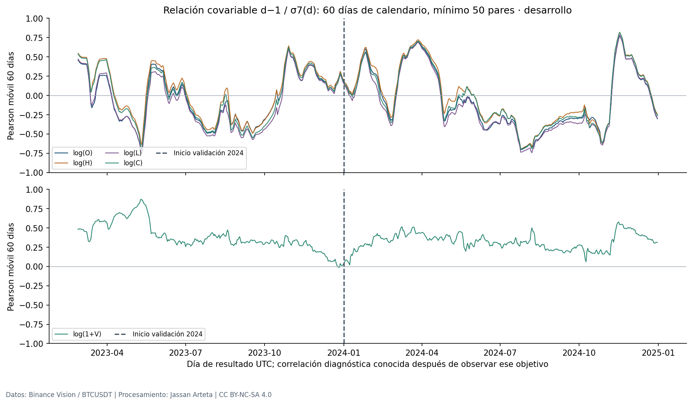
La trayectoria describe cómo cambia la asociación observada dentro del desarrollo. Las ventanas consecutivas se solapan y no son réplicas independientes. No se atribuyen rupturas significativas ni causas de mercado por inspección de la gráfica. La correlación del día \(d\) se conoce después de observar su objetivo: es un diagnóstico retrospectivo y no una característica predictiva disponible sin desplazamiento en el origen de ese mismo día.
El resumen de las curvas contiene 309 ventanas definidas en 2023 y 366 en 2024 por covariable. Para volumen, la mediana de Pearson móvil pasa de 0,3395 a 0,3157, con signo positivo en 99,03 % y 100 % de las ventanas definidas. Los precios presentan cambios de signo y rangos amplios; por ejemplo, apertura recorre aproximadamente −0,724 a 0,632 en 2023. Son estimaciones retrospectivas solapadas, no pruebas independientes de cambios de régimen. El resumen anual de relaciones móviles conserva cobertura, cuantiles y signos; veinte ventanas se reconstruyeron independientemente para verificar el cálculo.
Decisión de preprocesamiento: estudiar la estabilidad de las relaciones solo con pasado y mantener la separación cronológica; una correlación móvil del día d no se usa como predictor de ese mismo día.
Impacto en la arquitectura: evaluar capacidad temporal bajo las mismas ventanas y datos, sin añadir capas por una oscilación gráfica ni inferir un modelo superior por el signo del coeficiente.
Riesgos identificados: ventanas solapadas, interpretación retrospectiva como señal anticipable y confusión entre cambio marginal, deriva de la relación y ruptura estadísticamente confirmada.
2.2.3.2.3. Residuos de una referencia lineal regularizada#
Se ajustaron cuatro referencias Ridge diagnósticas, una por D=7/14/21/28, con las mismas cinco covariables de cada ventana, aplanadas a 5D atributos. Se usan valores OHLCV en su escala original antes de estandarizarlos; los logaritmos de §2.2.3.2.1 pertenecen al análisis descriptivo de correlaciones. La regularización α=1 se fijó para este diagnóstico, sin búsqueda de hiperparámetros ni selección de una historia ganadora. Se minimiza la suma de errores cuadrados más α por la norma cuadrada de los coeficientes, con intercepto no penalizado; el valor de α corresponde a esa convención de suma, no a otra escala de penalización.
Cada columna se estandariza con media y desviación poblacional calculadas únicamente en el ajuste permitido de 2023; una columna constante tendría escala uno. La implementación utiliza NumPy/SciPy y solución de Cholesky. Los parámetros exportados reproducen las predicciones y una solución independiente por sistema aumentado las verifica con diferencia máxima de 2,46×10⁻¹⁴. No se transforma ni recorta el objetivo y no se recortan las predicciones.
El primer origen del diagnóstico Ridge del EDA es el 01/01/2024. Su embargo D limita el ajuste a u≤t−D−1, con ventanas y etiquetas válidas. Esas cuatro referencias se ajustaron una vez con datos admisibles de 2023 y aportan residuos de desarrollo de 2024. Se utilizan exclusivamente para explorar dependencia residual; no definen el procedimiento de entrenamiento mensual de las redes ni la política futura de test.
Historia D |
Muestras de ajuste 2023 |
Último resultado permitido de ajuste |
Residuos fuera del ajuste en 2024 |
ACF de rezago 1 |
Referencia Ljung–Box a 7 rezagos, ajustada Holm12 |
|---|---|---|---|---|---|
7 |
343 |
2023-12-24 |
366 |
0,7665 |
2.09312e-155 |
14 |
322 |
2023-12-17 |
366 |
0,7322 |
2.921e-77 |
21 |
301 |
2023-12-10 |
366 |
0,7625 |
1.00396e-92 |
28 |
280 |
2023-12-03 |
366 |
0,7623 |
4.75881e-100 |
Hay 1.464 predicciones de validación, 366 por referencia, y cero predicciones negativas en este diagnóstico sin recorte. El residuo se define como observado menos pronosticado: un valor negativo indica sobreestimación de volatilidad. Son cuatro referencias sobre las mismas fechas, no cuatro mercados independientes ni ejecuciones de los tres modelos DL. No se construye un ranking de desempeño ni se contrasta aquí el margen del 5 % frente a persistencia.
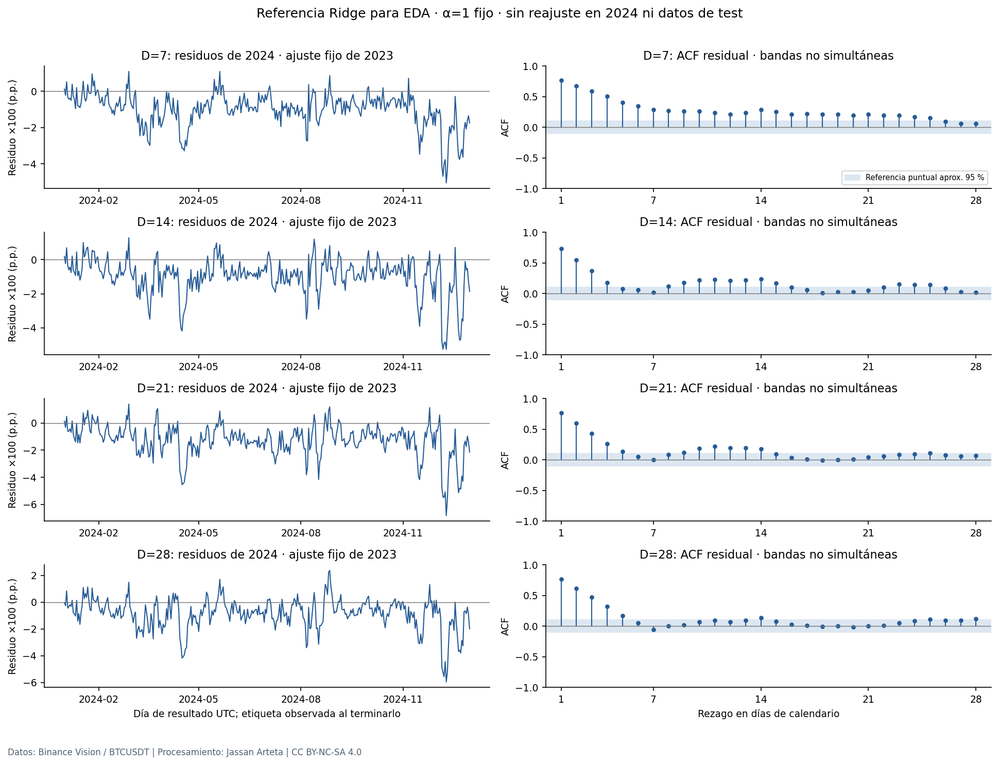
Se calculó ACF de los residuos de 2024 en rezagos 1–28 y Ljung–Box en 7, 14 y 28, con Holm sobre los doce contrastes. Se usa model_df=0 porque no se estima un orden ARMA sobre estos errores de validación; no se resta 5D a los grados de libertad de los rezagos. Las bandas ACF ±1,96/√366 son referencias puntuales aproximadas de ruido blanco, no bandas simultáneas ni robustas a cualquier dependencia. Los valores Ljung–Box son referencias asintóticas exploratorias, no probabilidades exactas en muestras finitas o ante cualquier cambio de régimen.
La ACF(1) de 0,732–0,766 y los doce valores ajustados —entre 3,85×10⁻²¹¹ y 2,92×10⁻⁷⁷— muestran incompatibilidad con el escenario de ausencia de autocorrelación bajo esa referencia. Esto señala dinámica que la referencia lineal no explica. Las etiquetas consecutivas comparten seis retornos, y también pueden influir la deriva, la especificación lineal, la regularización o la ausencia de reajuste; el diagnóstico no identifica una causa única ni mide el ruido externo de los precios.
Revisión del tipo de problema. Se mantiene el tipo 4 mientras la entrada contenga solo OHLCV rezagadas. La autocorrelación obliga a estudiar cómo representar mejor esa dinámica y cómo hacer inferencia con dependencia; no incorpora automáticamente la historia del objetivo. Si se deciden añadir rezagos de volatilidad, se deberá registrar el nuevo contrato y revisar la ruta como tipo 3 antes de ejecutarlo. El ajuste presente no demuestra que esa modificación sea necesaria ni que una red ya la haya resuelto.
Se publican las configuraciones y cortes, las predicciones y residuos, las ACF, los doce Ljung–Box, los parámetros de las referencias y el resumen reproducible. Se verificaron las fechas, el embargo, los hashes de entrenamiento y el escalado sin información futura. Esta operación de diagnóstico Ridge no abrió test ni entrenó redes DL, piloto o benchmark. Las redes y sus resultados posteriores se registran por separado en los capítulos 4–5.
Decisión de preprocesamiento: conservar los desfases OHLCV y el embargo, ajustar escalas solo con el pasado y no añadir rezagos del objetivo sin registrar el cambio de problema.
Impacto en la arquitectura: contrastar posteriormente representaciones temporales con la misma información; el error de una referencia lineal no selecciona por sí solo LSTM, TCN o atención ni fija sus tamaños.
Riesgos identificados: dependencia por etiquetas solapadas, extrapolación y deriva y falta de adaptación de una referencia diagnóstica, p-values asintóticos sobreinterpretados y reutilización de este diagnóstico como benchmark final o evidencia de desempeño en test.
2.2.3.3. Implicaciones clave#
Las historias de las covariables son D=7/14/21/28 días. La partición cronológica con embargo D, el escalado ajustado solo con el pasado permitido y el control de disponibilidad responden al riesgo de fuga temporal. Se conserva n=7 y h=1; las referencias diagnósticas no seleccionan una arquitectura ni sustituyen el benchmark posterior.
2.2.3.3.1. Reproducibilidad, decisiones y límites#
Los tres módulos reutilizan CSV de desarrollo y comprueban sus hashes. El módulo descriptivo original conserva los perfiles marginales y las curvas móviles; su contador de cero modelos corresponde a ese módulo. La ampliación específica añade disponibilidad, cohorte común y comprobaciones independientes de veinte ventanas móviles. El tercer módulo ajusta exclusivamente las cuatro referencias Ridge y comprueba sus índices contra el primer origen del manifiesto de folds. Ninguno abre ZIP ni archivos de test.
/workspace/.venvs/deeplearning-eda/bin/python scripts/eda_covariates_documental.py
/workspace/.venvs/deeplearning-eda/bin/python scripts/eda_temporal_specific.py
/workspace/.venvs/deeplearning-eda/bin/python scripts/eda_temporal_reference.py
Los resultados están en results/eda_covariates_documental/, results/eda_temporal_specific/ y results/eda_temporal_reference/, con copias descargables en el libro. Se conservan las correlaciones marginales originales, las curvas móviles, sus conteos de pares y el perfil entre años. Los resúmenes de descriptivos originales, bloque C específico y referencia residual registran fuentes, software, controles y límites. La reconstrucción lineal es determinista y no requiere semilla de entrenamiento.
2.2.3.3.2. Correspondencia con los requisitos del bloque C#
Requisito aplicable de la guía |
Evidencia actual |
Estado y límite |
|---|---|---|
Frecuencia, regularidad y huecos |
§2.2.3.1: cinco covariables diarias UTC, 731 posiciones y 730 días OHLCV completos |
Ejecutado; 24/03/2023 excluido, sin imputación ni compresión del calendario |
Desfases y disponibilidad al pronosticar |
Contrato de disponibilidad y revisión k=1,…,28 |
Cero violaciones; OHLCV del día de resultado y su etiqueta no son entradas |
Correlaciones cruzadas con rezagos |
§2.2.3.2.1: 140 pares covariable–rezago, Pearson y Spearman sobre los mismos 308 días de 2023 |
Ejecutado; máximos descriptivos, sin selección de D ni causalidad |
Deriva de la relación covariables–objetivo |
§2.2.3.2.2: ventanas de 60 días, mínimo 50 pares; 309/366 ventanas definidas por covariable y año |
Ejecutado como diagnóstico retrospectivo; no confirma rupturas estadísticas |
Residuos de un modelo de referencia |
§2.2.3.2.3: cuatro referencias Ridge de EDA, 366 residuos de 2024 por D; ACF y doce Ljung–Box/Holm |
Ejecutado; fuerte dependencia residual con interpretación exploratoria y límites asintóticos |
Decisión sobre la historia del objetivo |
Entrada OHLCV sin rezagos de volatilidad; revisión explícita a la luz de los residuos |
Se mantiene tipo 4. Añadir historia del objetivo requeriría registrar tipo 3 antes de ejecutarlo |
Ventanas, partición y embargo |
D=7/14/21/28; manifiesto versión 2 y corte \(u\le t-D-1\) verificado para las referencias |
Aplicado al diagnóstico Ridge; las redes usan sus propios bloques mensuales de Filipe |
Escalado ajustado solo con el pasado |
Media y desviación de las muestras permitidas de 2023 para cada Ridge |
Ejecutado en la referencia; las redes ajustaron sus propios escaladores solo con entrenamiento en §4.2, sin reutilizar los de Ridge |
Riesgo de fuga temporal y protección de test |
Fechas, hashes e índices del EDA y sus Ridge comprobados |
Cero ZIP de test abiertos por este EDA; la evaluación final posterior conserva su propia congelación y auditoría |
Interpretación técnica de cada análisis |
Decisión de preprocesamiento, efecto sobre arquitectura y riesgos en §§2.2.3.1–2.2.3.3 |
Incluida; no se atribuye superioridad a una arquitectura sin evaluación |
Los requisitos generales de distribución, calidad y partición se desarrollan en §2.1. Los diagnósticos de retornos de §2.5 complementan la revisión; el análisis de residuos específico del bloque C está en §2.2.3.2.3. Completar este diagnóstico no completa la selección bibliográfica ni el benchmark de los tres modelos DL.
Decisión de preprocesamiento: conservar el calendario, las ausencias y la disponibilidad causal de OHLCV; mantener las cinco covariables acordadas sin escoger un subconjunto por estas gráficas.
Impacto en la arquitectura: conservar una entrada \(D\times5\) para las historias confirmadas y el mismo objetivo de siete retornos diarios. Las correlaciones y los residuos lineales no fijan el ancho, la profundidad, el rezago ganador ni una red superior.
Riesgos identificados: correlaciones espurias de niveles, objetivo y ventanas solapados, selección retrospectiva por inspección, fechas comprimidas y uso indebido de una correlación diagnóstica como predictor contemporáneo. Las cuatro referencias son ajustes de EDA; no se extraen conclusiones de test ni resultados de entrenamiento de redes.
2.2.4. Regresión Espacial#
No aplica. Cada muestra representa un origen temporal de BTCUSDT, sin coordenadas, regiones o ubicaciones de predicción. La distancia entre fechas no es distancia geográfica.
2.2.4.1. Estructura geográfica#
No aplica: no hay ubicaciones para construir un mapa del objetivo, evaluar cobertura y densidad de muestreo espacial, identificar agrupamientos o vacíos, ni declarar un sistema de coordenadas y una proyección. Los timestamps describen tiempo, no posición geográfica.
2.2.4.2. Autocorrelación espacial#
No aplica: sin ubicaciones y vecindad espacial no se definen una matriz de pesos, I de Moran global o local (LISA), C de Geary ni un semivariograma con rango, sill y efecto nugget. Tampoco se estima una distancia de decorrelación para dimensionar bloques espaciales. La autocorrelación temporal se trata en el bloque pertinente.
2.2.4.3. Covariables#
No aplica el diagnóstico por ubicación: no existen unidades espaciales para estudiar estacionariedad o heterogeneidad espacial de las relaciones, multicolinealidad por región o calidad por sitio. La redundancia entre OHLCV y sus cambios temporales tienen su análisis propio; no se presentan como evidencia geográfica.
2.2.4.4. Implicaciones clave#
No aplica: no corresponde representar coordenadas, embeddings posicionales geográficos o grafos de vecindad, ni separar bloques mediante un buffer superior al rango de un semivariograma inexistente. La advertencia de la guía sobre fuga espacial y desempeño inflado con particiones aleatorias no se convierte en un diagnóstico geográfico para estos datos. Un índice temporal o una codificación de la posición en la ventana no convierten la tarea en regresión espacial.
Decisión de preprocesamiento: conservar fechas y ventanas OHLCV; no incorporar coordenadas ni una partición espacial.
Impacto en la arquitectura: este bloque no justifica módulos geográficos o grafos espaciales.
Riesgos identificados: confundir distancia temporal con espacial o atribuir independencia geográfica a muestras de una misma serie.
2.2.5. Regresión Espacio-Temporal#
No aplica. El contrato tiene un único mercado y una secuencia temporal, sin nodos, celdas, sensores distribuidos o ubicaciones múltiples. Las cinco columnas OHLCV son atributos de cada día, no cinco lugares.
2.2.5.1. Estructura conjunta#
No aplica: no existe un tensor nodos o celdas × tiempo × atributos, una rejilla geográfica o una red de sensores. Por ello no se analizan perfiles temporales por ubicación ni mapas por instante. La estructura D×5 de la entrada conserva únicamente tiempo y covariables.
2.2.5.2. Dependencia espacio-temporal#
No aplica: no hay vecinos geográficos para calcular Moran espacio-temporal, correlaciones cruzadas entre ubicaciones o variogramas espacio-temporales. Tampoco procede estudiar separabilidad, estacionariedad espacial conjunta, propagación o difusión entre sitios. Los rezagos temporales de OHLCV se mantienen en el bloque de regresión temporal.
2.2.5.3. Datos faltantes y heterogeneidad#
No aplica el análisis por sensor y ubicación: no hay sensores ni sitios para comparar patrones de faltantes o dinámicas locales atípicas. Los faltantes de minutos y días de la serie sí se conservan en el EDA general y temporal, con exclusión estricta y sin reinterpretarlos como ausencia espacial.
2.2.5.4. Implicaciones clave#
No aplica la componente espacial: no se construye un grafo por distancia, adyacencia o correlación entre ubicaciones, ni se selecciona una arquitectura conjunta espacial y temporal por este inciso. La partición cronológica permanece exigida por el problema; los bloques espaciales para generalización a ubicaciones nuevas no corresponden a este contrato. El riesgo combinado de fuga temporal y espacial de esta modalidad no se evalúa como tal, porque falta una componente espacial; la prevención de fuga temporal sigue vigente.
Decisión de preprocesamiento: mantener la cuadrícula temporal y los controles de disponibilidad; no crear ubicaciones o sensores a partir de las columnas OHLCV.
Impacto en la arquitectura: no se añaden componentes espaciales por la existencia de ventanas temporales.
Riesgos identificados: tratar atributos como nodos geográficos o declarar generalización a ubicaciones que no se observan.
2.2.6. Clasificación de Imágenes#
No aplica. Las entradas son valores OHLCV y el objetivo es continuo; no hay imágenes de entrada ni clases visuales. Las figuras del informe son visualizaciones de resultados, no observaciones que recibe el modelo.
2.2.6.1. Inspección visual#
No aplica: no existe una colección de imágenes por clase para inspeccionar muestras estratificadas, ruido, artefactos, marcas de agua o errores de etiquetado. Tampoco se evalúan fondos, bordes o metadatos como atajos visuales asociados con una clase inexistente.
2.2.6.2. Dimensionalidad y formato#
No aplica: no hay alto, ancho, relación de aspecto, canales o profundidad de bits de imágenes para decidir resizing, recorte, padding o normalización visual. D días y cinco covariables describen una ventana numérica, no una resolución visual.
2.2.6.3. Estadísticos de intensidad#
No aplica: no existen píxeles para calcular histogramas y medias o desviaciones por canal ajustadas solo con entrenamiento, ni para diagnosticar saturación, contraste o diferencias de adquisición entre clases. El escalado causal de OHLCV no se confunde con normalización de intensidad de imágenes.
2.2.6.4. Balance y duplicados#
No aplica el análisis visual: no hay conteos por clase que determinen aumento de datos, ponderación de clases o muestreo balanceado, ni imágenes para detectar duplicados o casi duplicados entre particiones mediante hashing perceptual o similitud de embeddings. Las comprobaciones de duplicados temporales del dataset permanecen en el EDA general.
2.2.6.5. Estructura de agrupamiento#
No aplica: no existen imágenes repetidas por sujeto, paciente, sitio o secuencia visual que requieran una partición agrupada de esa modalidad. Varias gráficas del mismo mercado no constituyen sujetos independientes ni nuevas muestras de entrada.
2.2.6.6. Implicaciones clave#
No aplica: no corresponde fijar resolución de imagen, augmentations que preserven clases visuales o profundidad de una CNN de imágenes. Una convolución temporal candidata, si se justifica en otra sección, no convierte el problema en clasificación visual.
Decisión de preprocesamiento: mantener las entradas numéricas acordadas; no convertir gráficas del informe en imágenes de entrenamiento.
Impacto en la arquitectura: este bloque no selecciona una CNN de imágenes ni un clasificador visual.
Riesgos identificados: cambiar la modalidad mediante capturas de gráficos, introducir información futura en esas imágenes o crear clases no definidas en el objetivo.
2.2.7. Segmentación de Imágenes#
No aplica. No hay pares imagen–máscara, etiquetas por píxel o regiones que delimitar. El objetivo es una volatilidad escalar por origen temporal.
2.2.7.1. Inspección visual de imágenes y máscaras#
No aplica: no se pueden superponer máscaras inexistentes ni revisar alineación, bordes, consistencia entre anotadores o máscaras vacías, ruidosas e inconsistentes. El etiquetado automático de volatilidad tiene controles propios y no equivale a anotación de regiones.
2.2.7.2. Distribución de clases a nivel de píxel#
No aplica: no hay frecuencias de píxeles por clase, fondo, clases visuales raras ni componentes conexas cuyo número, tamaño, forma o proporción respecto a la imagen deban medirse. Por ello no se derivan pérdidas Dice o Tversky, focal o ponderadas, ni muestreo de parches centrados en clases raras.
2.2.7.3. Dimensionalidad y formato#
No aplica: no existen resoluciones y canales de imágenes, consistencia de resolución imagen–máscara o necesidad de recortes en parches (tiling). Las dimensiones de OHLCV pertenecen a otro tipo de entrada.
2.2.7.4. Estadísticos de intensidad#
No aplica: sin imágenes ni clases por píxel no se calculan histogramas por canal y por clase, ni estadísticas de entrenamiento para normalizar intensidades. Las reglas de escalado de las covariables se conservan en el procedimiento temporal.
2.2.7.5. Duplicados y agrupamiento#
No aplica: no hay imágenes repetidas, mosaicos o recortes solapados de una misma escena que deban mantenerse juntos entre particiones. Tampoco hay sujetos o sitios visuales por los que agrupar. Esto no elimina los controles temporales de duplicados, solapamiento y disponibilidad del proyecto.
2.2.7.6. Implicaciones clave#
No aplica: no corresponde escoger profundidad de un codificador–decodificador de segmentación, resolución de entrada o métricas por clase visual. En una tarea con máscaras, las transformaciones geométricas se coordinarían entre imagen y máscara y las fotométricas afectarían la imagen preservando las etiquetas; ninguna se incorpora aquí.
Decisión de preprocesamiento: no generar máscaras, parches o clases por píxel a partir de las gráficas.
Impacto en la arquitectura: este bloque no justifica una FCN, U-Net o un decodificador de segmentación.
Riesgos identificados: confundir una curva del informe con una región a segmentar o aplicar operaciones visuales que cambien el contrato numérico.
2.2.8. Clasificación de Texto#
No aplica. Las cinco covariables son numéricas; no se han incorporado documentos, noticias o publicaciones textuales como entradas. Los nombres de columnas y los metadatos de adquisición no forman un corpus de lenguaje natural.
2.2.8.1. Longitud de textos#
No aplica: no hay documentos para medir palabras, tokens de subpalabra o percentiles 90, 95 y 99, ni para derivar longitud máxima, truncamiento o padding textual. D mide días de historia, no longitud de texto.
2.2.8.2. Análisis léxico#
No aplica: no existe vocabulario documental para estudiar frecuencias, ley de Zipf, términos discriminantes mediante información mutua o log-odds, o atajos por nombres propios, fuentes y plantillas. Las asociaciones temporales entre variables numéricas no son un análisis léxico.
2.2.8.3. Tokenización y vocabulario#
No aplica: no se define vocabulario por palabras o subpalabras, tasa de palabras fuera de vocabulario ni cobertura de embeddings preentrenados. Los valores OHLCV no necesitan una tokenización de lenguaje natural.
2.2.8.4. Ruido y calidad#
No aplica: caracteres especiales, URLs, mayúsculas, emojis, stopwords, idiomas mixtos y errores ortográficos no son atributos del contrato predictivo. No se decide limpieza textual ni qué información de formato preservar en documentos inexistentes; la calidad de precios, tiempos y etiquetas se audita por separado.
2.2.8.5. Balance, duplicados y fuga semántica#
No aplica: no hay etiquetas textuales discretas para medir desbalance, documentos para detectar duplicados o casi duplicados mediante n-gramas o embeddings, ni autores, fuentes o hilos por los que agrupar. La fuente Binance identifica procedencia de mercado, no autoría de textos; las particiones temporales y la revisión de fuga mantienen su propio tratamiento.
2.2.8.6. Implicaciones clave#
No aplica: no se eligen embeddings de palabra o subpalabra, longitud de secuencia textual o una CNN de texto, RNN, LSTM o GRU para clasificar documentos. Usar una red recurrente con datos numéricos, si se justifica, no añade una modalidad textual.
Decisión de preprocesamiento: conservar OHLCV sin limpieza, vocabulario o tokenización de texto; cualquier incorporación futura de noticias requeriría otro contrato y disponibilidad verificable.
Impacto en la arquitectura: este bloque no selecciona un clasificador de texto ni embeddings lingüísticos.
Riesgos identificados: presentar metadatos como documentos, asumir que citar estudios con noticias añade ese insumo o introducir textos publicados después del pronóstico.
2.2.9. Etiquetado Secuencial#
No aplica. No se asignan etiquetas categóricas a tokens o entidades de una secuencia. Cada ventana OHLCV tiene como salida una volatilidad continua, no una secuencia BIO o BIOES.
2.2.9.1. Esquema de etiquetas#
No aplica: no existen etiquetas BIO/BIOES, frecuencia de etiquetas, proporción de la clase O, transiciones inválidas o restricciones de decodificación de entidades. En ese esquema O significa fuera de entidad, no dato faltante. Las métricas de entidad frente a token pertenecen a una tarea distinta del objetivo numérico.
2.2.9.2. Estructura de las secuencias#
No aplica el análisis de secuencias anotadas: no hay oraciones, segmentos etiquetados (spans), tokens fuera de vocabulario o tokens con múltiples etiquetas. La longitud D y sus rezagos siguen siendo relevantes para el problema temporal, pero no son longitudes de entidades lingüísticas.
2.2.9.3. Dependencias entre etiquetas#
No aplica: no existe una secuencia de etiquetas discretas consecutivas para estimar una matriz de transición o justificar un decodificador estructurado, como CRF. La dependencia de volatilidades móviles se estudia en el análisis temporal y no se sustituye por transiciones de categorías.
2.2.9.4. Calidad de anotación, duplicados y fuga#
No aplica la anotación documental: no hay anotadores de tokens, oraciones repetidas o documentos que obliguen a agrupar por documento en vez de oración. Las etiquetas se calculan de precios y fechas; sus controles de cálculo, duplicados y disponibilidad son los del dataset numérico.
2.2.9.5. Implicaciones clave#
No aplica: no se selecciona representación por palabra, carácter o subpalabra, una RNN, LSTM o GRU de etiquetado por token con o sin CRF, ni manejo de desbalance de O. La posible utilización de una LSTM para ventanas OHLCV no convierte su salida escalar en etiquetado secuencial.
Decisión de preprocesamiento: mantener el objetivo continuo, sin fabricar etiquetas BIO/BIOES o entidades.
Impacto en la arquitectura: no se añade un clasificador por token ni un decodificador estructurado por este bloque.
Riesgos identificados: confundir historia temporal de entrada con una secuencia de etiquetas o tratar O como una regla de imputación.
2.2.10. Aprendizaje Secuencia a Secuencia#
No aplica. La entrada tiene D días, pero la salida principal es un único valor de volatilidad con h=1. No hay una secuencia destino generada ni pares de textos origen–destino.
2.2.10.1. Longitudes de origen y destino#
No aplica el análisis de pares de secuencias: no se estudian longitudes de origen y destino lingüísticos, su razón o correlación, ni se derivan longitudes máximas, bucketing o límites de decodificación. La ventana histórica y el horizonte escalar se definen en el contrato temporal; una entrada secuencial no exige una salida secuencial.
2.2.10.2. Vocabularios#
No aplica: no existen vocabularios de origen y destino, tasas de palabras fuera de vocabulario, coberturas o una decisión de tokenización compartida o separada. Las cinco covariables numéricas no se convierten en diccionarios lingüísticos.
2.2.10.3. Calidad del alineamiento entre pares#
No aplica el alineamiento lingüístico: no hay pares de textos desalineados, ruidosos, truncados, duplicados o casi duplicados entre particiones. Sí debe conservarse la alineación causal entre ventana OHLCV y etiqueta futura, ya documentada para regresión temporal; se trata de un requisito diferente y permanece vigente.
2.2.10.4. Distribución de contenido#
No aplica: no hay dominios, temas o estilos de un corpus de generación ni desplazamiento textual entre particiones. Los cambios de distribución del mercado se examinan en el EDA general y temporal, sin atribuirles significado de dominio lingüístico.
2.2.10.5. Implicaciones clave#
No aplica: no se adopta un codificador–decodificador generativo, teacher forcing, decodificación voraz o por haz, ni métricas de generación por este inciso. Una partición por pares o documentos para evitar fuga de un corpus generativo tampoco corresponde a estos datos. Un encoder o una red recurrente candidata para una salida escalar no prueba que el problema sea secuencia a secuencia; cualquier cambio de salidas requiere registrar otro alcance.
Decisión de preprocesamiento: mantener h=1 y la alineación ventana–objetivo; no crear secuencias destino, vocabularios o pares textuales.
Impacto en la arquitectura: no se añade un decodificador generativo por recibir una ventana temporal.
Riesgos identificados: confundir D con longitud de salida, un encoder con un sistema generativo o resultados de generación con error de volatilidad.
2.3. Adquisición directa desde Binance Spot#
2.3.1. Fuente y alcance#
El dataset se adquirió directamente de Binance Spot y se preparó un derivado de desarrollo para este Entregable 1. No se usaron repositorios intermediarios, archivos procesados ajenos ni resultados de otros proyectos para construir los datos de mercado.
La fuente del proyecto es Binance Spot, par BTCUSDT, mediante los archivos públicos oficiales. Se adquirieron velas de un minuto; los cierres se usaron para calcular retornos y etiquetas, y OHLCV se agregó a días UTC. USDT es la moneda de cotización. La documentación técnica está en Binance Public Data.
El patrón de adquisición es:
https://data.binance.vision/data/spot/monthly/klines/BTCUSDT/1m/BTCUSDT-1m-AAAA-MM.zip
https://data.binance.vision/data/spot/monthly/klines/BTCUSDT/1m/BTCUSDT-1m-AAAA-MM.zip.CHECKSUM
Se descargaron los archivos y sus checksums directamente del proveedor, se verificó SHA-256 antes de procesarlos y se registraron URL, fecha de adquisición, tamaño, hash, esquema y unidades temporales. La auditoría distinguió timestamps en milisegundos antes de 2025 y microsegundos desde 2025; los archivos brutos permanecen intactos.
El calendario objetivo sigue siendo desarrollo 2023–2024 y test 2025–agosto de 2026. La cobertura de adquisición está verificada en §2.3.2; la cobertura elegible del desarrollo se detalla en §2.1.2. El test se conserva por separado y no se explora para elegir preprocesamiento o hiperparámetros.
2.3.2. Estado de adquisición y resultados#
Adquisición directa completada para el rango solicitado: del 1 de enero de 2023, 00:00 UTC, al 30 de octubre de 2026, 23:59 UTC (apertura de la última vela). Se conservaron los ZIP y checksums oficiales, sin imputación ni modificación de sus filas.
Control de adquisición |
Resultado verificado |
|---|---|
Archivos mensuales, enero de 2023–septiembre de 2026 |
45 |
Archivos diarios, 1–30 de octubre de 2026 |
30 |
Total de ZIP con SHA-256 correcto |
75 de 75 |
Tamaño total de esos ZIP |
97.442.605 bytes |
Filas CSV brutas |
2.014.480 |
Minutos esperados en el calendario solicitado |
2.014.560 |
Minutos ausentes en los archivos verificados |
80 |
Timestamps de apertura duplicados, fuera de rango o desalineados |
0 |
Timestamps de cierre que no coinciden con el fin esperado de vela |
1 |
Los 80 minutos ausentes y el cierre inesperado pertenecen a marzo de 2023. La verificación de integridad no garantiza continuidad ni exactitud de precios. Ambos hallazgos se conservaron en la auditoría y motivan la exclusión del día en los derivados. Los controles de adquisición se distinguen de la validación de precios y del EDA de desarrollo ya documentados en §§2.1–2.2.
El manifiesto de adquisición registra URLs, SHA-256, bytes, fechas de verificación, unidades y conteos por archivo. El script reproducible es scripts/download_binance_spot.py, documentado en data/README.md. Los brutos están en /workspace/binance-spot-data/, fuera del repositorio y del sitio público.
Los archivos históricos respondieron HTTP 200. La API respondió HTTP 451 por restricción de ubicación; no se utilizó para adquirir los datos. Las particiones previstas en §1.3.4 se mantienen: disponer de septiembre–octubre de 2026 no los asignó automáticamente al test de fase I. La fase II realiza una nueva asignación explícita antes de calcular sus resultados.
El EDA de desarrollo de este capítulo se ejecutó sobre los 24 archivos mensuales de 2023–2024, verificados otra vez antes de leerlos. No se abrieron ZIP de 2025–2026 para generar las figuras.
2.3.3. Estado de las condiciones de preparación#
Acceso a archivos oficiales y verificación TLS: comprobados. La API no es necesaria.
Conservar la versión de las condiciones aplicables a la adquisición y comprobar cualquier designación específica del dataset; las condiciones consultadas se resumen en §2.3.4.
Adquisición y checksums del rango solicitado: completados; brutos y manifiesto conservados. Derivados de desarrollo y EDA ejecutados; ventanas y CV de cuatro historias materializadas; test final y manifiesto supervisado disponibles en registros separados.
Timestamps, unidades, unicidad, huecos, cierres y coherencia OHLC auditados antes de crear los retornos de desarrollo; estos controles deberán mantenerse en la preparación posterior.
Configuraciones y reglas de CV registradas y ejecutadas, con D=7/14/21/28, n=7 y horizonte de un día. El protocolo del ciclo vigente se cerró antes de puntuar sus checkpoints sobre el test histórico ya conocido.
EDA general y diagnósticos temporales ejecutados; la correspondencia del bloque C para regresión temporal y su relación con las decisiones se documenta en §2.2.3.
2.3.4. Condiciones de uso y atribución#
La consulta de los Binance Vision Dataset Terms oficiales registrada el 2 de noviembre de 2026 se complementó con una copia conservada en la revisión del 03/11/2026. El documento declara versión 1.0, con última actualización 26 de agosto de 2026. Se publican la copia de los términos y su registro de procedencia; el SHA-256 de la copia es 99c4921dbe023cd68c1a447775707d621453cc78aec6ac0bfe2e6c06a5114ee0. Esta fecha corresponde a la conservación de las condiciones, no a la adquisición original de los ZIP.
Cláusula |
Condición declarada por el proveedor |
Aplicación al proyecto |
|---|---|---|
3.1–3.4 |
CC BY-NC-SA 4.0, salvo designación específica; uso comercial requiere un acuerdo separado |
Investigación académica no comercial; comprobar condiciones específicas y conservar la versión aplicable |
4.1 y 4.5 |
Contempla investigación académica y proyectos educativos abiertos no monetizados; atribución y misma licencia para obras derivadas redistribuidas |
Identificar Binance Vision como fuente y documentar transformaciones; incorporar el aviso de licencia aplicable al publicar derivados |
2.4 y 5 |
Las condiciones abarcan datos derivados, gráficos, modelos e indicadores; puede haber derechos de terceros |
Revisar las condiciones del contenido concreto antes de redistribuirlo; no atribuir una licencia global a materiales ajenos |
7 |
Respetar límites y protocolos de descarga |
Usar archivos oficiales y no eludir restricciones de acceso |
8 y 10 |
No implicar respaldo de Binance; datos sin garantías de integridad o exactitud |
Declarar autoría independiente y auditar calidad y cobertura |
La atribución de los futuros productos derivados identificará Binance Vision — Binance Spot, BTCUSDT, enlazará la fuente y las condiciones, indicará los cambios realizados y la licencia aplicable. Los materiales del curso y artículos citados conservan sus propios derechos.
La copia fechada permite revisar las condiciones conservadas para esta versión del proyecto. Su revisión no sustituye los checksums de cada archivo de mercado, que se verificaron individualmente durante la adquisición. El repositorio oficial permite consultar documentación, mientras los ZIP se sirven desde data.binance.vision.
2.4. Reproducibilidad y estado de cierre#
2.4.1. Código y productos#
Se ejecutó scripts/eda_binance_development.py usando los ZIP oficiales. El script comprueba hashes, restringe la apertura de datos a 2023–2024, audita columnas y continuidad y genera tablas, JSON y figuras. Los resultados están en results/eda_development/; las imágenes están en book/_static/eda/. Se pueden descargar el resumen de resultados, las pruebas de estacionariedad diarias y los OHLCV diarios de desarrollo.
cd /workspace/DeepLearning_202630
python3.12 -m venv /workspace/.venvs/deeplearning-eda
/workspace/.venvs/deeplearning-eda/bin/python -m pip install -r requirements-eda.lock.txt
OPENBLAS_NUM_THREADS=2 OMP_NUM_THREADS=2 /workspace/.venvs/deeplearning-eda/bin/python scripts/eda_binance_development.py
Los archivos raw deben existir bajo /workspace/binance-spot-data/, reproducibles con el descargador documentado en data/README.md. El build del libro incluye las figuras guardadas; no vuelve a ejecutar automáticamente el EDA.
Los datos y derivados se atribuyen a Binance Vision / Binance Spot; procesamiento y gráficas del EDA por Jassan Arteta. La figura oficial de timeseries-cv tiene su propia atribución y licencia MIT, indicadas en §2.1.4. Se documentan las transformaciones y se comparten los derivados publicados bajo CC BY-NC-SA 4.0 y las condiciones aplicables del proveedor. Esto no altera los derechos de la figura de timeseries-cv, los materiales del curso o los artículos citados.
Para reproducir los folds, se utiliza un entorno independiente: timeseries-cv 0.1.5 requiere NumPy menor que 2, mientras el EDA conserva su entorno ya verificado.
python3.12 -m venv /workspace/.venvs/timeseries-cv
/workspace/.venvs/timeseries-cv/bin/python -m pip install -r requirements-cv.txt
/workspace/.venvs/timeseries-cv/bin/python scripts/prepare_forward_chaining.py
/workspace/.venvs/timeseries-cv/bin/python scripts/prepare_dl_r2_cv.py
El último comando materializa los índices registrados D7; las otras entradas conservan sus manifiestos firmados de preparación. El entrenamiento vigente usa scripts/run_gru_lstm_tcn.py en el entorno PyTorch separado y consume los folds de las cuatro historias. Es un adaptador público de reproducción posterior a la ejecución registrada; no se atribuye su nuevo hash a los ajustes ya guardados. Las fases manuales, las rutas de salida nuevas y la verificación sin entrenar se detallan en BUILD.md.
El ejemplo oficial 4/3/2 es ilustrativo; no cambia el horizonte principal de Bitcoin a tres días. El script puede recuperar la misma figura desde el notebook oficial fijado a un commit usando --refresh-illustration, y verifica su SHA-256.
La ampliación del EDA general utiliza exclusivamente los CSV diarios ya existentes, con hashes verificados; no vuelve a abrir ZIP ni ajusta modelos:
/workspace/.venvs/deeplearning-eda/bin/python scripts/eda_general_quality.py
/workspace/.venvs/deeplearning-eda/bin/python scripts/eda_general_shift.py
El primer script genera perfiles de objetivos, calidad, máscaras y reconstrucción independiente de etiquetas en results/eda_general_quality/. El segundo genera el perfil causal, distancias marginales y referencia de permutación por bloques en results/eda_general_shift/. Se conservan sus controles y límites de calidad y método de desplazamiento, con software, semillas cuando aplican y fuentes. Ambos registran cero modelos ajustados y cero archivos de test abiertos. Los resultados numéricos de estos diagnósticos no sustituyen predicciones fuera de entrenamiento ni el análisis de residuos del benchmark.
2.4.2. Evidencias y pendientes#
Producto |
Estado real |
|---|---|
Adquisición directa y SHA-256 |
75 ZIP oficiales verificados |
Calidad de precios y OHLCV de desarrollo |
Ejecutada; un día incompleto excluido de derivados |
Modelado diario y entradas 7/14/21/28 días |
Documentados según aclaraciones recibidas |
Distribuciones de cuatro ventanas de volatilidad diaria |
Ocho perfiles año–ventana, cuantiles, colas e IQR de referencia 2023 ejecutados |
Figuras de series, huecos, correlaciones, PCA y estructura temporal |
Generadas y enlazadas; ampliadas con cola empírica, máscaras y seis ECDF causales |
Consistencia del etiquetado |
2.924 posiciones comprobadas; 2.780 válidas reconstruidas y cero discrepancias de elegibilidad; no mide ruido externo |
Desplazamiento de covariables y objetivo |
Seis marginales del perfil causal; referencia condicional por bloques 14/28 y Holm sobre doce contrastes; alcance exploratorio |
ADF/KPSS, ARCH y diagnóstico polinómico |
Ejecutados con especificaciones y límites declarados |
Disponibilidad temporal y ausencia de consulta de test en este script |
Restricción verificada; cero ZIP de test abiertos |
Bloque C: disponibilidad y relaciones con rezagos |
Ejecutado; 140 pares sobre cohorte común de 308 días, resúmenes móviles y controles causales |
Referencia lineal y residuos fuera del ajuste |
Cuatro Ridge diagnósticos con escalas de 2023; 1.464 predicciones de 2024, ACF y doce Ljung–Box/Holm |
Covariables, transformaciones y selección de configuración |
Cinco covariables OHLCV conservadas; escalado propio de las referencias EDA. La CV principal compara D=7/14/21/28 y aprende escalas con el entrenamiento mensual permitido; las escalas finales quedan fijas durante test |
Información mutua, VIF y efecto de anomalías sobre error de modelos |
No ejecutados |
Folds de validación 2024 |
Preparación de 366 orígenes por configuración; CV de cuatro historias con doce bloques mensuales de Filipe utilizados para entrenar y predecir las 366 fechas por trayectoria |
Identidad del test bruto |
Manifiesto original de 20 ZIP preservado; el ciclo vigente utiliza su derivado auditado sin reabrir esos ZIP |
Test supervisado y evaluación final |
Configuración previa y cohorte por reglas cerradas; 608 fechas comunes, 72960 predicciones, sin reajustes o selección mediante test |
Tres modelos DL, predicciones y MAPE/MAE/RMSE/MSE/MASE |
Ejecutados mediante CV de Filipe y documentados en los capítulos 4–5; BDS mensual de cuatro historias y diez semillas en CV/test; suplemento inicial D7 separado; referencias Ridge como EDA |
Las gráficas y las cuatro referencias lineales son evidencia de EDA de desarrollo. El estado de la revisión bibliográfica se documenta por separado en el capítulo 3. La CV de las tres redes está ejecutada y registrada por separado; la ampliación de historias, el cierre de configuración y la evaluación de test se documentan en su experimento posterior separado. El diagnóstico de residuos lineales no sustituye esos productos.
2.5. Diagnósticos temporales complementarios#
Se conservan los diagnósticos del bloque B de la guía como complementos pertinentes para dependencia temporal. La correspondencia específica con el bloque C de regresión temporal se desarrolla en §2.2.3. Las observaciones de modelado son diarias; los diagnósticos horarios y de minuto mantienen sus unidades explícitas. Esta reclasificación documental no cambia los datos, el reloj de predicción ni la política de exclusión.
2.5.1. Visualización, descomposición y cambios de régimen#
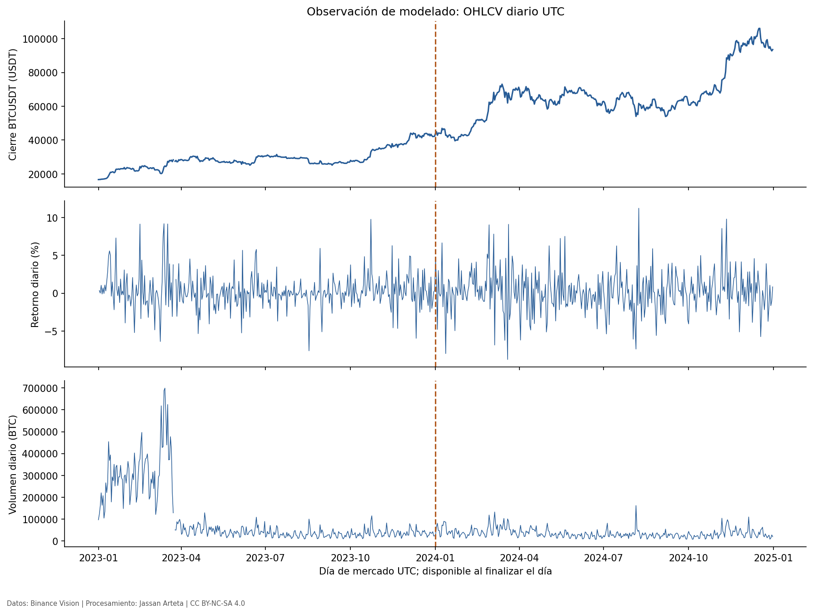
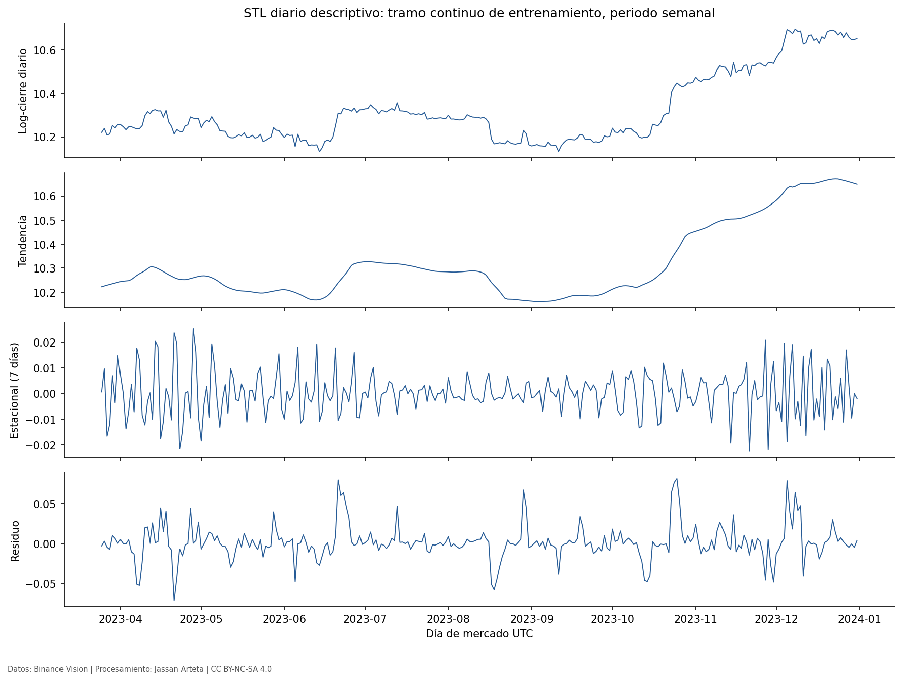
La descomposición STL usa el mayor tramo diario continuo de entrenamiento, 25/03/2023–31/12/2023, con periodo semanal de siete días y ajuste robusto. Es exploratoria: imponer un periodo en STL no demuestra que exista estacionalidad significativa ni habilita usar su suavizado centrado como característica causal.
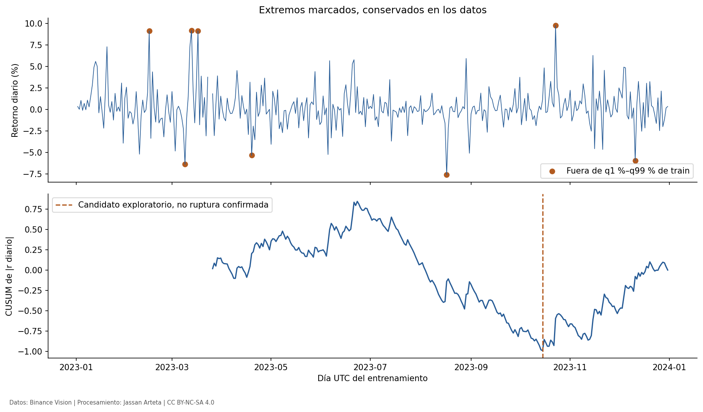
El máximo absoluto de un CUSUM estandarizado sobre magnitudes de retornos diarios, excluyendo 28 días en cada extremo del tramo, señala 2023-10-15 como candidato exploratorio. No se ejecutó una prueba de significación para confirmar una ruptura; tampoco se atribuye una causa de mercado sin documentación.
Decisión de preprocesamiento: mantener escalas diferenciadas, continuidad y transformaciones causales; no usar STL centrado como predictor.
Impacto en la arquitectura: contrastar las cuatro longitudes diarias confirmadas mediante validación, sin elegir una por una ruptura identificada retrospectivamente.
Riesgos identificados: cambio de régimen retrospectivo, agregaciones mal etiquetadas e interpretación de patrones visuales como evidencia de capacidad predictiva.
2.5.2. Estacionariedad: ADF y KPSS#
Las pruebas principales se ejecutaron en los mayores tramos diarios continuos de entrenamiento. ADF usa constante y siete rezagos fijos, sin selección automática; KPSS usa constante y rezagos automáticos. Se interpreta conjuntamente a nivel exploratorio de 0,05, sin corrección por multiplicidad.
Serie diaria |
N |
p ADF |
p KPSS |
Interpretación conjunta |
|---|---|---|---|---|
log_close_daily |
282 |
0.945954 |
<0,01 |
Compatible con no estacionariedad |
return_daily |
281 |
2.75372e-07 |
>0,10 |
Compatible con estacionariedad |
abs_return_daily |
281 |
1.17163e-06 |
>0,10 |
Compatible con estacionariedad |
sigma_7 |
275 |
0.00242274 |
>0,10 |
Compatible con estacionariedad |
sigma_14 |
268 |
0.00138616 |
>0,10 |
Compatible con estacionariedad |
sigma_21 |
261 |
0.0633405 |
>0,10 |
Inconcluso: ninguna rechaza |
sigma_28 |
254 |
0.219837 |
>0,10 |
Inconcluso: ninguna rechaza |
Los extremos tabulados de KPSS se informan como desigualdades, no como p-values exactos. Los resultados son específicos del tramo y la especificación: la compatibilidad de retornos con estacionariedad no garantiza estabilidad futura; las ventanas 21/28 producen resultados inconclusos bajo estas pruebas. Los periodos exactos y rezagos efectivos están en los CSV de resultados.
Decisión de preprocesamiento: justificar transformaciones y escalado desde entrenamiento; no diferenciar automáticamente todas las series para forzar un resultado.
Impacto en la arquitectura: usar representaciones con significado temporal claro y evaluar su estabilidad dentro de los folds.
Riesgos identificados: pruebas repetidas sin control, confundir no rechazo con prueba de verdad y trasladar propiedades de precios a volatilidad.
2.5.3. Dependencia temporal y elección de rezagos#
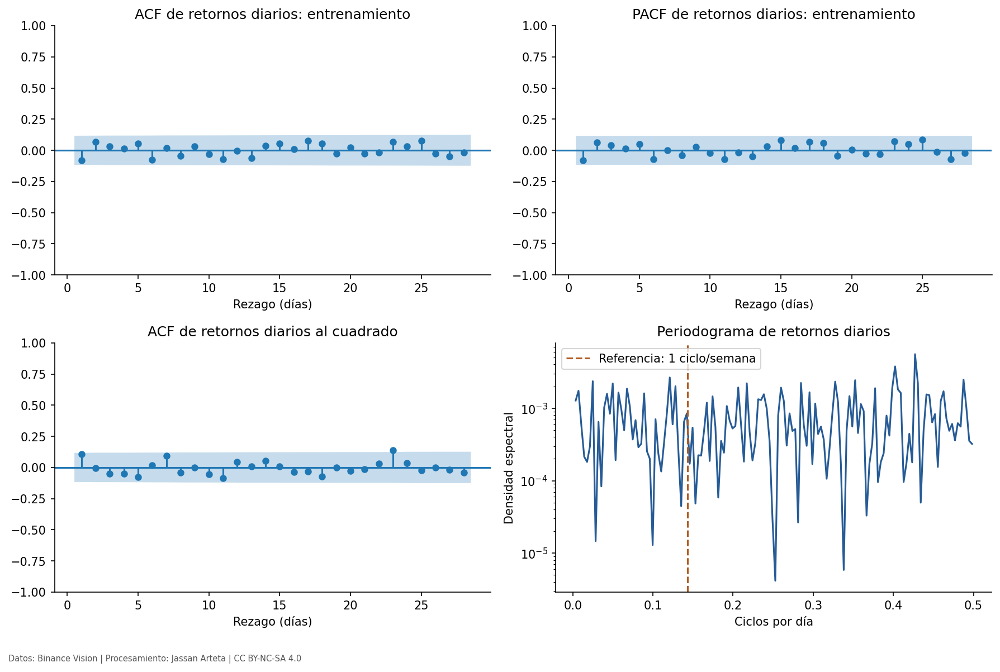
Se usó el tramo continuo de retornos diarios 26/03/2023–31/12/2023, con 281 observaciones. ACF y PACF muestran 28 rezagos; sus bandas al 95 % son aproximadas, no correcciones simultáneas por todos los rezagos. El periodograma incluye una referencia semanal, sin declarar un pico significativo por inspección visual.
Diagnóstico diario |
Especificación |
Estadístico |
p-value exploratorio |
|---|---|---|---|
ARCH-LM |
Media constante; 7 rezagos |
7.90557 |
0.340994 |
Wald con covarianza HAC |
Términos cuadrático y cúbico del retorno de un día de rezago; HAC 7 |
7.95233 |
0.0187574 |
ARCH-LM no rechaza bajo esta especificación diaria; esto no prueba ausencia de heterocedasticidad. El Wald detecta asociación polinómica bajo su modelo y supuestos HAC, no toda forma de no linealidad ni rentabilidad predictiva. Ambos son exploratorios, con muestra limitada y sin ajuste por multiplicidad. No son pruebas sobre residuos de redes; los diagnósticos sobre errores de las redes de CV requieren la ejecución específica prevista en §5.4.
Como contraste de escala se ejecutaron los diagnósticos sobre datos de un minuto y agregados horarios:
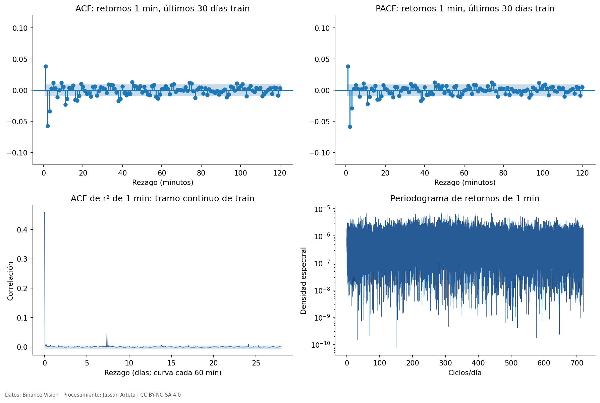
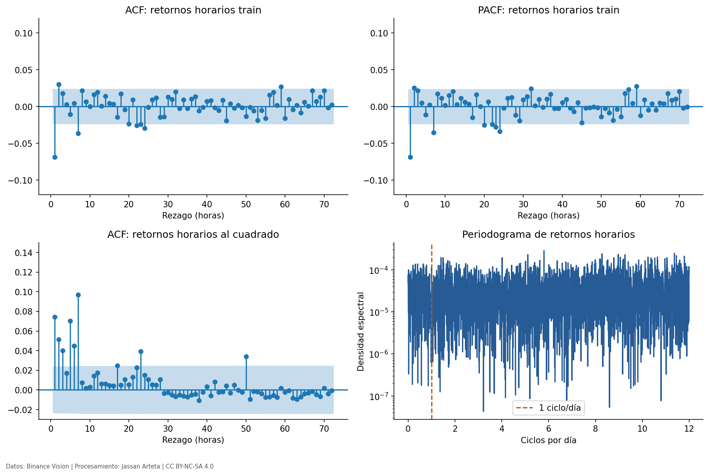
La ACF/PACF de un minuto usa los últimos 30 días de entrenamiento; la ACF de cuadrados hasta 28 días usa el mayor tramo continuo de entrenamiento y se representa cada 60 minutos. No se unen observaciones a ambos lados de huecos. Las pruebas horarias no se presentan como evidencia intercambiable con las diarias.
Decisión de preprocesamiento: mantener como candidatas las entradas de 7/14/21/28 días; elegir por validación y registrar sensibilidad, sin seleccionar rezagos por test.
Impacto en la arquitectura: las ventanas diarias fijan los pasos temporales de GRU, LSTM y TCN; sus configuraciones y D=7/14/21/28 se documentan en §4.2, sin atribuir esa elección a una correlación aislada. El respaldo primario, la limitada recurrencia de TCN y la justificación de las dos variantes recurrentes permanecen explícitos en el capítulo 3.
Riesgos identificados: dependencia de etiquetas móviles, bandas aproximadas, múltiples pruebas y confusión de frecuencias.
2.5.4. Frecuencia, granularidad y faltantes#
La auditoría distingue 80 minutos ausentes del CSV y un minuto con cierre temporal no elegible. Ninguno se interpola. Se agregan OHLCV por días UTC completos; un retorno diario que necesite un día inválido permanece ausente. El par único no requiere un modelo global entre activos.
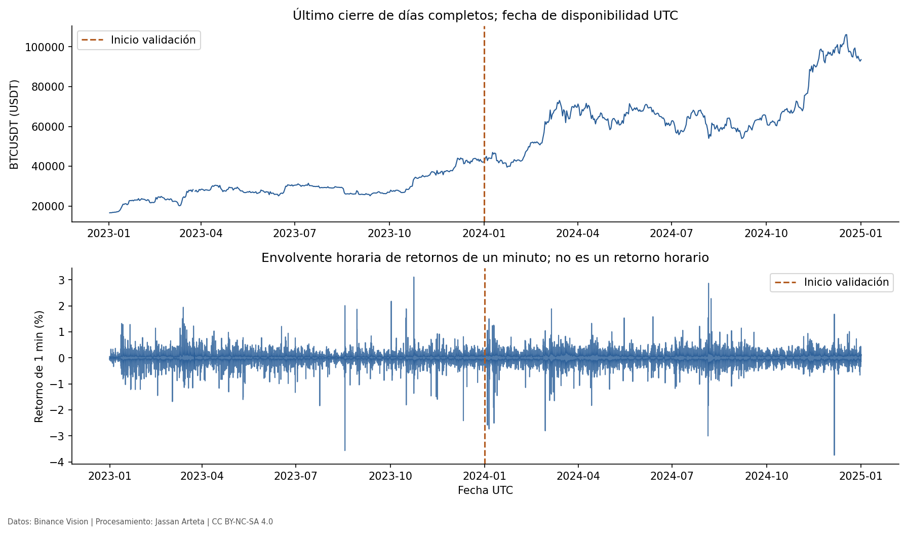
La envolvente representa extremos horarios de retornos de un minuto para visualizar todos los episodios; no son retornos horarios. La etiqueta temporal de un cierre agregado indica cuándo se vuelve observable.
Decisión de preprocesamiento: construir secuencias sobre una cuadrícula diaria regular y rechazar ventanas afectadas por días incompletos.
Impacto en la arquitectura: los modelos reciben D pasos diarios; no 1.440 pasos por día salvo un experimento distinto expresamente declarado.
Riesgos identificados: confundir la fecha de apertura con disponibilidad del cierre, unidades ms/us y retornos calculados atravesando huecos.
2.5.5. Outliers y anomalías#
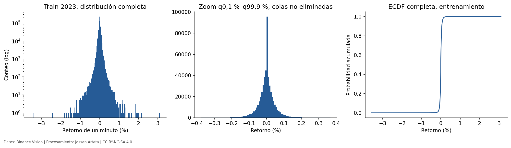
En los retornos de un minuto de entrenamiento, la asimetría es -0.674028 y el exceso de curtosis 132.006. No se presupone una distribución normal. El zoom de la figura no elimina colas del dataset. Para retornos diarios, el criterio exploratorio fuera de q1 %–q99 % de entrenamiento marca 8 días de 2023 y 15 de 2024 con umbrales fijos de train; no se eliminó ninguno por ser extremo.
Decisión de preprocesamiento: distinguir errores verificables de eventos reales y conservar extremos. No se aplica clipping ni se cambia la pérdida sin validación.
Impacto en la arquitectura: controlar estabilidad de entrenamiento y comparar pérdidas/métricas bajo el mismo protocolo; las colas no justifican automáticamente mayor complejidad.
Riesgos identificados: borrar episodios de interés y elegir umbrales con información futura. El efecto específico de estos episodios sobre el error de las redes y la causa de los eventos requieren un análisis segmentado adicional; las métricas globales de desarrollo del capítulo 5 no aíslan ese efecto.
2.5.6. Horizonte, estrategia de pronóstico y validación#
Las entradas confirmadas son 7/14/21/28 días de historia; el horizonte principal es un día. Se exploraron cuatro definiciones de volatilidad histórica, sin confundirlas con la longitud de entrada. Cualquier horizonte adicional al principal debe registrarse antes del entrenamiento y de la evaluación.
Los folds se materializaron con timeseries-cv 0.1.5 y controles de fechas, observabilidad y continuidad. Sus índices se consumen para entrenar las redes en doce comienzos mensuales de 2024 y producir pronósticos diarios h=1. La función no garantiza por sí sola ausencia de fuga: los controles de disponibilidad y el embargo de §2.1.4 se aplican antes de admitir muestras. Los diagnósticos BDS por bloque de CV y Ljung–Box se calculan sobre residuos guardados de GRU/LSTM/TCN. Conservan las semillas, dimensiones, rezagos, familias de multiplicidad y casos no definidos en sus tablas. BDS contrasta i.i.d. y no prueba exclusivamente no linealidad; los bloques mensuales cortos y las etiquetas solapadas limitan las referencias asintóticas. El análisis de las referencias lineales del EDA conserva su alcance propio y no se mezcla con esas redes.
Decisión de preprocesamiento: fijar las configuraciones de objetivos y orígenes, producir manifiestos de muestras y ajustar transformaciones solo con pasado.
Impacto en la arquitectura: entrada diaria con dimensión explícita; salida principal escalar no negativa; cualquier salida adicional debe registrarse.
Riesgos identificados: leakage por etiqueta conocida, transformaciones globales y supuestos de independencia entre volatilidades solapadas.
Relación con el estudio D7 planificado. El capítulo 9 reúne el diseño público previo, la rejilla equitativa de ocho candidatos por familia, el piloto de 60 días, el cálculo de R y los resultados sobre el 01/09–30/10/2026. Esa fase mantiene n=7/h=1 y covariables OHLCV, con D7 fijo. Los resultados de fase I y sus limitaciones permanecen identificados; la potencia planificada entre semillas no representa potencia temporal ni confirma otros mercados.